Chapter 21 "Periodic Trends and the " and Chapter 22 "The " described the chemistry of the s-block and p-block elements. In this chapter, we survey the chemistry of the d-block elements, which are also called the transition metals. We again use valence electron configurations and periodic trends, as well as the principles of chemical bonding, thermodynamics, and kinetics, as tools to describe the properties and reactivity of these elements. Because all the d-block elements are metals, they do not have the extreme variability in chemistry that we saw among the elements of the p block. Instead, these elements exhibit significant horizontal and vertical similarities in chemistry, and all have a common set of characteristic properties due to partially filled d subshells.
Titanium metal is light and corrosion resistant. The Guggenheim Museum in Bilbao, Spain, is the largest titanium-clad building in the world. The exterior is covered with 344,000 ft2 of 0.016-in.-thick titanium pieces, each with a unique shape.
Alloys and compounds of the d-block elements are important components of the materials the modern world depends on for its continuing technological development, while most of the first-row transition metals are essential for life. This chapter introduces some of the key industrial and biological roles of these elements. You will learn, for example, why copper, silver, and gold have been used for coins and jewelry since ancient times, how Cr3+ impurities can be responsible for the characteristic colors of both rubies and emeralds, why an iron oxide was used in primitive compasses, why insects have greenish-blue blood, and why cobalt is an essential component of vitamin B12.
The transition metals, groups 3–12 in the periodic table, are generally characterized by partially filled d subshells in the free elements or their cations. (Although the metals of group 12 do not have partially filled d shells, their chemistry is similar in many ways to that of the preceding groups, and we therefore include them in our discussion.) Unlike the s-block and p-block elements, the transition metals exhibit significant horizontal similarities in chemistry in addition to their vertical similarities.
The valence electron configurations of the first-row transition metals are given in Table 23.1 "Valence Electron Configurations of the First-Row Transition Metals". As we go across the row from left to right, electrons are added to the 3d subshell to neutralize the increase in the positive charge of the nucleus as the atomic number increases. With two important exceptions, the 3d subshell is filled as expected based on the aufbau principle and Hund’s rule. Unexpectedly, however, chromium has a 4s13d5 electron configuration rather than the 4s23d4 configuration predicted by the aufbau principle, and copper is 4s13d10 rather than 4s23d9. In Chapter 7 "The Periodic Table and Periodic Trends", we attributed these anomalies to the extra stability associated with half-filled subshells. Because the ns and (n − 1)d subshells in these elements are similar in energy, even relatively small effects are enough to produce apparently anomalous electron configurations.
Table 23.1 Valence Electron Configurations of the First-Row Transition Metals
| Sc | Ti | V | Cr | Mn | Fe | Co | Ni | Cu | Zn |
|---|---|---|---|---|---|---|---|---|---|
| 4s23d1 | 4s23d2 | 4s23d3 | 4s13d5 | 4s23d5 | 4s23d6 | 4s23d7 | 4s23d8 | 4s13d10 | 4s23d10 |
In the second-row transition metals, electron–electron repulsions within the 4d subshell cause additional irregularities in electron configurations that are not easily predicted. For example, Nb and Tc, with atomic numbers 41 and 43, both have a half-filled 5s subshell, with 5s14d4 and 5s14d6 valence electron configurations, respectively. Further complications occur among the third-row transition metals, in which the 4f, 5d, and 6s orbitals are extremely close in energy. Although La has a 6s25d1 valence electron configuration, the valence electron configuration of the next element—Ce—is 6s25d04f2. From this point through element 71, added electrons enter the 4f subshell, giving rise to the 14 elements known as the lanthanides. After the 4f subshell is filled, the 5d subshell is populated, producing the third row of the transition metals. Next comes the seventh period, where the actinides have three subshells (7s, 6d, and 5f) that are so similar in energy that their electron configurations are even more unpredictable.
As we saw in the s-block and p-block elements, the size of neutral atoms of the d-block elements gradually decreases from left to right across a row, due to an increase in the effective nuclear charge (Zeff) with increasing atomic number. In addition, the atomic radius increases down a group, just as it does in the s and p blocks. Because of the lanthanide contraction, however, the increase in size between the 3d and 4d metals is much greater than between the 4d and 5d metals (Figure 23.1 "The Metallic Radii of the First-, Second-, and Third-Row Transition Metals"). (For more information on the lanthanides, see Chapter 7 "The Periodic Table and Periodic Trends", Section 7.3 "Energetics of Ion Formation".) The effects of the lanthanide contraction are also observed in ionic radii, which explains why, for example, there is only a slight increase in radius from Mo3+ to W3+.
Figure 23.1 The Metallic Radii of the First-, Second-, and Third-Row Transition Metals

Because of the lanthanide contraction, the second- and third-row transition metals are very similar in size.
As you learned in Chapter 7 "The Periodic Table and Periodic Trends", electrons in (n − 1)d and (n − 2)f subshells are only moderately effective at shielding the nuclear charge; as a result, the effective nuclear charge experienced by valence electrons in the d-block and f-block elements does not change greatly as the nuclear charge increases across a row. Consequently, the ionization energies of these elements increase very slowly across a given row (Figure 7.10 "A Plot of Periodic Variation of First Ionization Energy with Atomic Number for the First Six Rows of the Periodic Table"). In addition, as we go from the top left to the bottom right corner of the d block, electronegativities generally increase, densities and electrical and thermal conductivities increase, and enthalpies of hydration of the metal cations decrease in magnitude, as summarized in Figure 23.2 "Some Trends in Properties of the Transition Metals". Consistent with this trend, the transition metals become steadily less reactive and more “noble” in character from left to right across a row. The relatively high ionization energies and electronegativities and relatively low enthalpies of hydration are all major factors in the noble character of metals such as Pt and Au.
Figure 23.2 Some Trends in Properties of the Transition Metals

The electronegativity of the elements increases, and the hydration energies of the metal cations decrease in magnitude from left to right and from top to bottom of the d block. As a result, the metals in the lower right corner of the d block are so unreactive that they are often called the “noble metals.”
The similarity in ionization energies and the relatively small increase in successive ionization energies lead to the formation of metal ions with the same charge for many of the transition metals. This in turn results in extensive horizontal similarities in chemistry, which are most noticeable for the first-row transition metals and for the lanthanides and actinides. Thus all the first-row transition metals except Sc form stable compounds that contain the 2+ ion, and, due to the small difference between the second and third ionization energies for these elements, all except Zn also form stable compounds that contain the 3+ ion. The relatively small increase in successive ionization energies causes most of the transition metals to exhibit multiple oxidation states separated by a single electron. Manganese, for example, forms compounds in every oxidation state between −3 and +7. Because of the slow but steady increase in ionization potentials across a row, high oxidation states become progressively less stable for the elements on the right side of the d block. The occurrence of multiple oxidation states separated by a single electron causes many, if not most, compounds of the transition metals to be paramagnetic, with one to five unpaired electrons. This behavior is in sharp contrast to that of the p-block elements, where the occurrence of two oxidation states separated by two electrons is common, which makes virtually all compounds of the p-block elements diamagnetic.
Due to a small increase in successive ionization energies, most of the transition metals have multiple oxidation states separated by a single electron.
Most compounds of transition metals are paramagnetic, whereas virtually all compounds of the p-block elements are diamagnetic.
The electronegativities of the first-row transition metals increase smoothly from Sc (χ = 1.4) to Cu (χ = 1.9). Thus Sc is a rather active metal, whereas Cu is much less reactive. The steady increase in electronegativity is also reflected in the standard reduction potentials: thus E° for the reaction M2+(aq) + 2e− → M0(s) becomes progressively less negative from Ti (E° = −1.63 V) to Cu (E° = +0.34 V). Exceptions to the overall trends are rather common, however, and in many cases, they are attributable to the stability associated with filled and half-filled subshells. For example, the 4s23d10 electron configuration of zinc results in its strong tendency to form the stable Zn2+ ion, with a 3d10 electron configuration, whereas Cu+, which also has a 3d10 electron configuration, is the only stable monocation formed by a first-row transition metal. Similarly, with a half-filled subshell, Mn2+ (3d5) is much more difficult to oxidize than Fe2+ (3d6). The chemistry of manganese is therefore primarily that of the Mn2+ ion, whereas both the Fe2+ and Fe3+ ions are important in the chemistry of iron.
The transition metals form cations by the initial loss of the ns electrons of the metal, even though the ns orbital is lower in energy than the (n − 1)d subshell in the neutral atoms. This apparent contradiction is due to the small difference in energy between the ns and (n − 1)d orbitals, together with screening effects. The loss of one or more electrons reverses the relative energies of the ns and (n − 1)d subshells, making the latter lower in energy. Consequently, all transition-metal cations possess dn valence electron configurations, as shown in Table 23.2 for the 2+ ions of the first-row transition metals.
All transition-metal cations have dn electron configurations; the ns electrons are always lost before the (n − 1)d electrons.
Table 23.2 d-Electron Configurations of the Dications of the First-Row Transition Metals
| Ti2+ | V2+ | Cr2+ | Mn2+ | Fe2+ | Co2+ | Ni2+ | Cu2+ | Zn2+ |
|---|---|---|---|---|---|---|---|---|
| d 2 | d 3 | d 4 | d 5 | d 6 | d 7 | d 8 | d 9 | d 10 |
The most common oxidation states of the first-row transition metals are shown in Table 23.3 "Common Oxidation States of the First-Row Transition Metals*". The second- and third-row transition metals behave similarly but with three important differences:
The highest possible oxidation state, corresponding to the formal loss of all valence electrons, becomes increasingly less stable as we go from group 3 to group 8, and it is never observed in later groups.
In the transition metals, the stability of higher oxidation states increases down a column.
Table 23.3 Common Oxidation States of the First-Row Transition Metals*
| Sc | Ti | V | Cr | Mn | Fe | Co | Ni | Cu | Zn | |
|---|---|---|---|---|---|---|---|---|---|---|
| electronic structure | s 2 d 1 | s 2 d 2 | s 2 d 3 | s 1 d 5 | s 2 d 5 | s 2 d 6 | s 2 d 7 | s 2 d 8 | s 1 d 10 | s 2 d 10 |
| oxidation states | I | I | ||||||||
| II | II | II | II | II | II | II | II | II | ||
| III | III | III | III | III | III | III | III | III | ||
| IV | IV | IV | IV | IV | IV | IV | ||||
| V | V | V | V | V | ||||||
| VI | VI | VI | ||||||||
| VII | ||||||||||
| *The convention of using roman numerals to indicate the oxidation states of a metal is used here. | ||||||||||
Binary transition-metal compounds, such as the oxides and sulfides, are usually written with idealized stoichiometries, such as FeO or FeS, but these compounds are usually cation deficient and almost never contain a 1:1 cation:anion ratio. Thus a substance such as ferrous oxide is actually a nonstoichiometric compound with a range of compositions.
The acid–base character of transition-metal oxides depends strongly on the oxidation state of the metal and its ionic radius. Oxides of metals in lower oxidation states (less than or equal to +3) have significant ionic character and tend to be basic. Conversely, oxides of metals in higher oxidation states are more covalent and tend to be acidic, often dissolving in strong base to form oxoanions.
Two of the group 8 metals (Fe, Ru, and Os) form stable oxides in the +8 oxidation state. Identify these metals; predict the stoichiometry of the oxides; describe the general physical and chemical properties, type of bonding, and physical state of the oxides; and decide whether they are acidic or basic oxides.
Given: group 8 metals
Asked for: identity of metals and expected properties of oxides in +8 oxidation state
Strategy:
Refer to the trends outlined in Figure 23.1 "The Metallic Radii of the First-, Second-, and Third-Row Transition Metals", Figure 23.2 "Some Trends in Properties of the Transition Metals", Table 23.1 "Valence Electron Configurations of the First-Row Transition Metals", Table 23.2, and Table 23.3 "Common Oxidation States of the First-Row Transition Metals*" to identify the metals. Decide whether their oxides are covalent or ionic in character, and, based on this, predict the general physical and chemical properties of the oxides.
Solution:
The +8 oxidation state corresponds to a stoichiometry of MO4. Because the heavier transition metals tend to be stable in higher oxidation states, we expect Ru and Os to form the most stable tetroxides. Because oxides of metals in high oxidation states are generally covalent compounds, RuO4 and OsO4 should be volatile solids or liquids that consist of discrete MO4 molecules, which the valence-shell electron-pair repulsion (VSEPR) model predicts to be tetrahedral. Finally, because oxides of transition metals in high oxidation states are usually acidic, RuO4 and OsO4 should dissolve in strong aqueous base to form oxoanions.
Exercise
Predict the identity and stoichiometry of the stable group 9 bromide in which the metal has the lowest oxidation state and describe its chemical and physical properties.
Answer: Because the lightest element in the group is most likely to form stable compounds in lower oxidation states, the bromide will be CoBr2. We predict that CoBr2 will be an ionic solid with a relatively high melting point and that it will dissolve in water to give the Co2+(aq) ion.
The transition metals are characterized by partially filled d subshells in the free elements and cations. The ns and (n − 1)d subshells have similar energies, so small influences can produce electron configurations that do not conform to the general order in which the subshells are filled. In the second- and third-row transition metals, such irregularities can be difficult to predict, particularly for the third row, which has 4f, 5d, and 6s orbitals that are very close in energy. The increase in atomic radius is greater between the 3d and 4d metals than between the 4d and 5d metals because of the lanthanide contraction. Ionization energies and electronegativities increase slowly across a row, as do densities and electrical and thermal conductivities, whereas enthalpies of hydration decrease. Anomalies can be explained by the increased stabilization of half-filled and filled subshells. Transition-metal cations are formed by the initial loss of ns electrons, and many metals can form cations in several oxidation states. Higher oxidation states become progressively less stable across a row and more stable down a column. Oxides of small, highly charged metal ions tend to be acidic, whereas oxides of metals with a low charge-to-radius ratio are basic.
The transition metals show significant horizontal similarities in chemistry in addition to their vertical similarities, whereas the same cannot be said of the s-block and p-block elements. Explain why this is so.
The energy of the d subshell does not change appreciably in a given period. Why? What effect does this have on the ionization potentials of the transition metals? on their electronegativities?
Standard reduction potentials vary across the first-row transition metals. What effect does this have on the chemical reactivity of the first-row transition metals? Which two elements in this period are more active than would be expected? Why?
Many transition metals are paramagnetic (have unpaired electrons). How does this affect electrical and thermal conductivities across the rows?
What is the lanthanide contraction? What effect does it have on the radii of the transition metals of a given group? What effect does it have on the chemistry of the elements in a group?
Why are the atomic volumes of the transition elements low compared with the elements of groups 1 and 2? Ir has the highest density of any element in the periodic table (22.65 g/cm3). Why?
Of the elements Ti, Ni, Cu, and Cd, which do you predict has the highest electrical conductivity? Why?
The chemistry of As is most similar to the chemistry of which transition metal? Where in the periodic table do you find elements with chemistry similar to that of Ge? Explain your answers.
The coinage metals (group 11) have significant noble character. In fact, they are less reactive than the elements of group 12. Explain why this is so, referring specifically to their reactivity with mineral acids, electronegativity, and ionization energies. Why are the group 12 elements more reactive?
Give the valence electron configurations of the 2+ ion for each first-row transition element. Which two ions do you expect to have the most negative E° value? Why?
Arrange Ru3+, Cu2+, Zn, Ti4+, Cr3+, and Ni2+ in order of increasing radius.
Arrange Pt4+, Hg2+, Fe2+, Zr4+, and Fe3+ in order of decreasing radius.
Of Ti2+, V2+, Mn2+, Fe2+, Co2+, Ni2+, and Zn2+, which divalent ion has the smallest ionic radius? Explain your reasoning.
Ti2+, 3d2; V2+, 3d3; Cr2+, 3d4; Mn2+, 3d5; Fe2+, 3d6; Co2+, 3d7; Ni2+, 3d8; Cu2+, 3d9; Zn2+, 3d10. Because Zeff increases from left to right, Ti2+ and V2+ will have the most negative reduction potentials (be most difficult to reduce).
Hg2+ > Fe2+ > Zr4+ > Fe3+ > Pt4+
We turn now to a brief survey of the chemistry of the transition metals, beginning with group 3. As we shall see, the two heaviest members of each group usually exhibit substantial similarities in chemical behavior and are quite different from the lightest member.
As shown in Table 23.4 "Some Properties of the Elements of Groups 3, 4, and 5", the observed trends in the properties of the group 3 elements are similar to those of groups 1 and 2. Due to their ns2(n − 1)d1 valence electron configurations, the chemistry of all four elements is dominated by the +3 oxidation state formed by losing all three valence electrons. As expected based on periodic trends, these elements are highly electropositive metals and powerful reductants, with La (and Ac) being the most reactive. In keeping with their highly electropositive character, the group 3 metals react with water to produce the metal hydroxide and hydrogen gas:
Equation 23.1
2M(s) + 6H2O(l) → 2M(OH)3(s) + 3H2(g)The chemistry of the group 3 metals is almost exclusively that of the M3+ ion; the elements are powerful reductants.
Moreover, all dissolve readily in aqueous acid to produce hydrogen gas and a solution of the hydrated metal ion: M3+(aq).
Table 23.4 Some Properties of the Elements of Groups 3, 4, and 5
| Group | Element | Z | Valence Electron Configuration | Electronegativity | Metallic Radius (pm) | Melting Point (°C) | Density |
|---|---|---|---|---|---|---|---|
| 3 | Sc | 21 | 4s23d1 | 1.36 | 162 | 1541 | 2.99 |
| Y | 39 | 5s24d1 | 1.22 | 180 | 1522 | 4.47 | |
| La | 57 | 6s25d1 | 1.10 | 183 | 918 | 6.15 | |
| Ac | 89 | 7s26d1 | 1.10 | 188 | 1051 | 10.07 | |
| 4 | Ti | 22 | 4s23d2 | 1.54 | 147 | 1668 | 4.51 |
| Zr | 40 | 5s24d2 | 1.33 | 160 | 1855 | 6.52 | |
| Hf | 72 | 6s25d24f14 | 1.30 | 159 | 2233 | 13.31 | |
| 5 | V | 23 | 4s23d3 | 1.63 | 134 | 1910 | 6.00 |
| Nb | 41 | 5s24d3 | 1.60 | 146 | 2477 | 8.57 | |
| Ta | 73 | 6s25d34f14 | 1.50 | 146 | 3017 | 16.65 |
The group 3 metals react with nonmetals to form compounds that are primarily ionic in character. For example, reacting group 3 metals with the halogens produces the corresponding trihalides: MX3. The trifluorides are insoluble in water because of their high lattice energies, but the other trihalides are very soluble in water and behave like typical ionic metal halides. All group 3 elements react with air to form an oxide coating, and all burn in oxygen to form the so-called sesquioxides (M2O3), which react with H2O or CO2 to form the corresponding hydroxides or carbonates, respectively. Commercial uses of the group 3 metals are limited, but “mischmetal,” a mixture of lanthanides containing about 40% La, is used as an additive to improve the properties of steel and make flints for cigarette lighters.
Because the elements of group 4 have a high affinity for oxygen, all three metals occur naturally as oxide ores that contain the metal in the +4 oxidation state resulting from losing all four ns2(n − 1)d2 valence electrons. They are isolated by initial conversion to the tetrachlorides, as shown for Ti:
Equation 23.2
2FeTiO3(s) + 6C(s) + 7Cl2(g) → 2TiCl4(g) + 2FeCl3(g) + 6CO(g)followed by reduction of the tetrachlorides with an active metal such as Mg.
The chemistry of the group 4 metals is dominated by the +4 oxidation state. Only Ti has an extensive chemistry in lower oxidation states.
In contrast to the elements of group 3, the group 4 elements have important applications. Titanium (melting point = 1668°C) is often used as a replacement for aluminum (melting point = 660°C) in applications that require high temperatures or corrosion resistance. For example, friction with the air heats the skin of supersonic aircraft operating above Mach 2.2 to temperatures near the melting point of aluminum; consequently, titanium is used instead of aluminum in many aerospace applications. The corrosion resistance of titanium is increasingly exploited in architectural applications, as shown in the chapter-opening photo. Metallic zirconium is used in UO2-containing fuel rods in nuclear reactors, while hafnium is used in the control rods that modulate the output of high-power nuclear reactors, such as those in nuclear submarines.
Consistent with the periodic trends shown in Figure 23.2 "Some Trends in Properties of the Transition Metals", the group 4 metals become denser, higher melting, and more electropositive down the column (Table 23.4 "Some Properties of the Elements of Groups 3, 4, and 5"). Unexpectedly, however, the atomic radius of Hf is slightly smaller than that of Zr due to the lanthanide contraction. Because of their ns2(n − 1)d2 valence electron configurations, the +4 oxidation state is by far the most important for all three metals. Only titanium exhibits a significant chemistry in the +2 and +3 oxidation states, although compounds of Ti2+ are usually powerful reductants. In fact, the Ti2+(aq) ion is such a strong reductant that it rapidly reduces water to form hydrogen gas.
Reaction of the group 4 metals with excess halogen forms the corresponding tetrahalides (MX4), although titanium, the lightest element in the group, also forms dihalides and trihalides (X is not F). The covalent character of the titanium halides increases as the oxidation state of the metal increases because of increasing polarization of the anions by the cation as its charge-to-radius ratio increases. Thus TiCl2 is an ionic salt, whereas TiCl4 is a volatile liquid that contains tetrahedral molecules. All three metals react with excess oxygen or the heavier chalcogens (Y) to form the corresponding dioxides (MO2) and dichalcogenides (MY2). Industrially, TiO2, which is used as a white pigment in paints, is prepared by reacting TiCl4 with oxygen at high temperatures:
Equation 23.3
TiCl4(g) + O2(g) → TiO2(s) + 2Cl2(g)The group 4 dichalcogenides have unusual layered structures with no M–Y bonds holding adjacent sheets together, which makes them similar in some ways to graphite (Figure 23.3 "The Layered Structure of TiS"). The group 4 metals also react with hydrogen, nitrogen, carbon, and boron to form hydrides (such as TiH2), nitrides (such as TiN), carbides (such as TiC), and borides (such as TiB2), all of which are hard, high-melting solids. Many of these binary compounds are nonstoichiometric and exhibit metallic conductivity.
Figure 23.3 The Layered Structure of TiS2
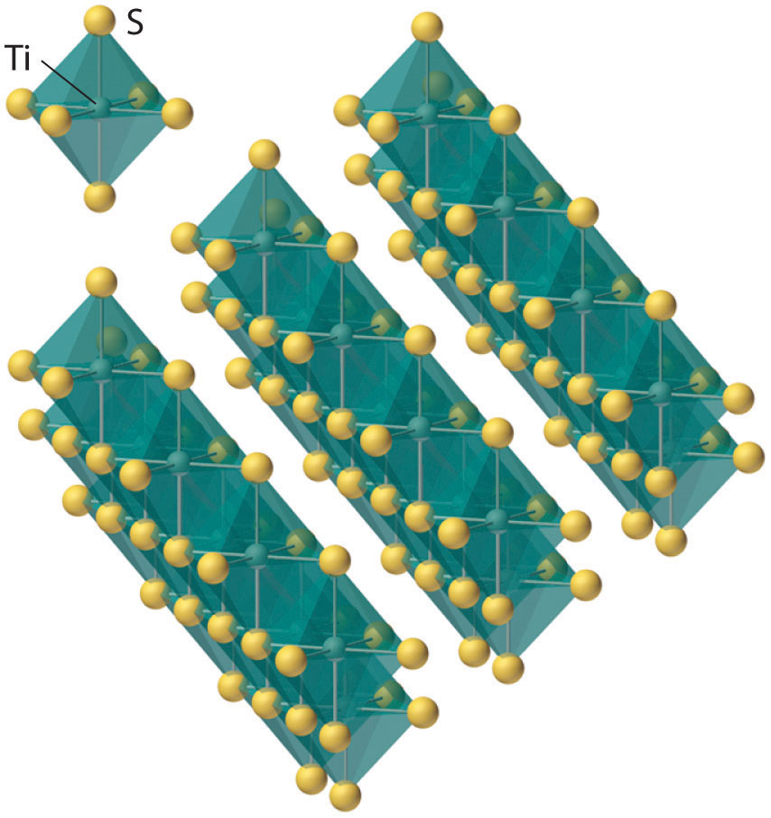Each titanium atom is surrounded by an octahedral arrangement of six sulfur atoms that are shared to form extended layers of atoms. Because the layers are held together by only van der Waals forces between adjacent sulfur atoms, rather than covalent bonds, the layers slide past one another relatively easily when a mechanical stress is applied.
Like the group 4 elements, all group 5 metals are normally found in nature as oxide ores that contain the metals in their highest oxidation state (+5). Because of the lanthanide contraction, the chemistry of Nb and Ta is so similar that these elements are usually found in the same ores.
Three-fourths of the vanadium produced annually is used in the production of steel alloys for springs and high-speed cutting tools. Adding a small amount of vanadium to steel results in the formation of small grains of V4C3, which greatly increase the strength and resilience of the metal, especially at high temperatures. The other major use of vanadium is as V2O5, an important catalyst for the industrial conversion of SO2 to SO3 in the contact process for the production of sulfuric acid. (For more information on sulfuric acid production, see Chapter 2 "Molecules, Ions, and Chemical Formulas", Section 2.6 "Industrially Important Chemicals".) In contrast, Nb and Ta have only limited applications, and they are therefore produced in relatively small amounts. Although niobium is used as an additive in certain stainless steels, its primary application is in superconducting wires such as Nb3Zr and Nb3Ge, which are used in superconducting magnets for the magnetic resonance imaging of soft tissues. Because tantalum is highly resistant to corrosion, it is used as a liner for chemical reactors, in missile parts, and as a biologically compatible material in screws and pins for repairing fractured bones.
The chemistry of the two heaviest group 5 metals (Nb and Ta) is dominated by the +5 oxidation state. The chemistry of the lightest element (V) is dominated by lower oxidation states, especially +4.
As indicated in Table 23.4 "Some Properties of the Elements of Groups 3, 4, and 5", the trends in properties of the group 5 metals are similar to those of group 4. Only vanadium, the lightest element, has any tendency to form compounds in oxidation states lower than +5. For example, vanadium is the only element in the group that forms stable halides in the lowest oxidation state (+2). All three metals react with excess oxygen, however, to produce the corresponding oxides in the +5 oxidation state (M2O5), in which polarization of the oxide ions by the high-oxidation-state metal is so extensive that the compounds are primarily covalent in character. Vanadium–oxygen species provide a classic example of the effect of increasing metal oxidation state on the protonation state of a coordinated water molecule: vanadium(II) in water exists as the violet hydrated ion [V(H2O)6]2+; the blue-green [V(H2O)6]3+ ion is acidic, dissociating to form small amounts of the [V(H2O)5(OH)]2+ ion and a proton; and in water, vanadium(IV) forms the blue vanadyl ion [(H2O)4VO]2+, which contains a formal V=O bond (Figure 23.4 "Aqueous Solutions of Vanadium Ions in Oxidation States of +2 to +5"). Consistent with its covalent character, V2O5 is acidic, dissolving in base to give the vanadate ion ([VO4]3−), whereas both Nb2O5 and Ta2O5 are comparatively inert. Oxides of these metals in lower oxidation states tend to be nonstoichiometric.
Figure 23.4 Aqueous Solutions of Vanadium Ions in Oxidation States of +2 to +5

Because vanadium ions with different oxidation states have different numbers of d electrons, aqueous solutions of the ions have different colors: in acid V(V) forms the pale yellow [VO2]+ ion; V(IV) is the blue vanadyl ion [VO]2+; and V(III) and V(II) exist as the hydrated V3+ (blue-green) and V2+ (violet) ions, respectively.
Although group 5 metals react with the heavier chalcogens to form a complex set of binary chalcogenides, the most important are the dichalcogenides (MY2), whose layered structures are similar to those of the group 4 dichalcogenides. The elements of group 5 also form binary nitrides, carbides, borides, and hydrides, whose stoichiometries and properties are similar to those of the corresponding group 4 compounds. One such compound, tantalum carbide (TiC), has the highest melting point of any compound known (3738°C); it is used for the cutting edges of high-speed machine tools.
As an illustration of the trend toward increasing polarizability as we go from left to right across the d block, in group 6 we first encounter a metal (Mo) that occurs naturally as a sulfide ore rather than as an oxide. Molybdenite (MoS2) is a soft black mineral that can be used for writing, like PbS and graphite. Because of this similarity, people long assumed that these substances were all the same. In fact, the name molybdenum is derived from the Greek molybdos, meaning “lead.” More than 90% of the molybdenum produced annually is used to make steels for cutting tools, which retain their sharp edge even when red hot. In addition, molybdenum is the only second- or third-row transition element that is essential for humans. The major chromium ore is chromite (FeCr2O4), which is oxidized to the soluble [CrO4]2− ion under basic conditions and reduced successively to Cr2O3 and Cr with carbon and aluminum, respectively. Pure chromium can be obtained by dissolving Cr2O3 in sulfuric acid followed by electrolytic reduction; a similar process is used for electroplating metal objects to give them a bright, shiny, protective surface layer. Pure tungsten is obtained by first converting tungsten ores to WO3, which is then reduced with hydrogen to give the metal.
Consistent with periodic trends, the group 6 metals are slightly less electropositive than those of the three preceding groups, and the two heaviest metals are essentially the same size because of the lanthanide contraction (Table 23.5 "Some Properties of the Elements of Groups 6 and 7"). All three elements have a total of six valence electrons, resulting in a maximum oxidation state of +6. Due to extensive polarization of the anions, compounds in the +6 oxidation state are highly covalent. As in groups 4 and 5, the lightest element exhibits variable oxidation states, ranging from Cr2+, which is a powerful reductant, to CrO3, a red solid that is a powerful oxidant. For Mo and W, the highest oxidation state (+6) is by far the most important, although compounds in the +4 and +5 oxidation states are known.
The metals become increasing polarizable across the d block.
Table 23.5 Some Properties of the Elements of Groups 6 and 7
| Group | Element | Z | Valence Electron Configuration | Electronegativity | Metallic Radius (pm) | Melting Point (°C) | Density |
|---|---|---|---|---|---|---|---|
| 6 | Cr | 24 | 4s13d5 | 1.66 | 128 | 1907 | 7.15 |
| Mo | 42 | 5s14d5 | 2.16 | 139 | 2623 | 10.20 | |
| W | 74 | 6s25d44f14 | 1.70 | 139 | 3422 | 19.30 | |
| 7 | Mn | 25 | 4s23d5 | 1.55 | 127 | 1246 | 7.30 |
| Tc | 43 | 5s24d5 | 2.10 | 136 | 2157 | 11.50 | |
| Re | 75 | 6s25d54f14 | 1.90 | 137 | 3186 | 20.80 |
The chemistry of the two heaviest group 6 metals (Mo and W) is dominated by the +6 oxidation state. The chemistry of the lightest element (Cr) is dominated by lower oxidation states.
As observed in previous groups, the group 6 halides become more covalent as the oxidation state of the metal increases: their volatility increases, and their melting points decrease. Recall that as the electronegativity of the halogens decreases from F to I, they are less able to stabilize high oxidation states; consequently, the maximum oxidation state of the corresponding metal halides decreases. Thus all three metals form hexafluorides, but CrF6 is unstable at temperatures above −100°C, whereas MoF6 and WF6 are stable. Consistent with the trend toward increased stability of the highest oxidation state for the second- and third-row elements, the other halogens can oxidize chromium to only the trihalides, CrX3 (X is Cl, Br, or I), while molybdenum forms MoCl5, MoBr4, and MoI3, and tungsten gives WCl6, WBr5, and WI4.
Both Mo and W react with oxygen to form the covalent trioxides (MoO3 and WO3), but Cr reacts to form only the so-called sesquioxide (Cr2O3). Chromium will form CrO3, which is a highly toxic compound that can react explosively with organic materials. All the trioxides are acidic, dissolving in base to form the corresponding oxoanions ([MO4]2−). Consistent with periodic trends, the sesquioxide of the lightest element in the group (Cr2O3) is amphoteric. The aqueous chemistry of molybdate and tungstate is complex, and at low pH they form a series of polymeric anions called isopolymetallates, such as the [Mo8O26]4− ion, whose structure is as follows:
An isopolymolybdate cluster. The [Mo8O26]4− ion, shown here in both side and top views, is typical of the oxygen-bridged clusters formed by Mo(VI) and W(VI) in aqueous solution.
Reacting molybdenum or tungsten with heavier chalcogens gives binary chalcogenide phases, most of which are nonstoichiometric and electrically conducting. One of the most stable is MoS2; it has a layered structure similar to that of TiS2 (Figure 23.3 "The Layered Structure of TiS"), in which the layers are held together by only weak van der Waals forces, which allows them to slide past one another rather easily. Consequently, both MoS2 and WS2 are used as lubricants in a variety of applications, including automobile engines. Because tungsten itself has an extraordinarily high melting point (3380°C), lubricants described as containing “liquid tungsten” actually contain a suspension of very small WS2 particles.
As in groups 4 and 5, the elements of group 6 form binary nitrides, carbides, and borides whose stoichiometries and properties are similar to those of the preceding groups. Tungsten carbide (WC), one of the hardest compounds known, is used to make the tips of drill bits.
Continuing across the periodic table, we encounter the group 7 elements (Table 23.5 "Some Properties of the Elements of Groups 6 and 7"). One group 7 metal (Mn) is usually combined with iron in an alloy called ferromanganese, which has been used since 1856 to improve the mechanical properties of steel by scavenging sulfur and oxygen impurities to form MnS and MnO. Technetium is named after the Greek technikos, meaning “artificial,” because all its isotopes are radioactive. One isotope, 99mTc (m for metastable), has become an important biomedical tool for imaging internal organs. (For more information on biomedical imaging, see Chapter 20 "Nuclear Chemistry", Section 20.5 "Applied Nuclear Chemistry".) Because of its scarcity, Re is one of the most expensive elements, and its applications are limited. It is, however, used in a bimetallic Pt/Re catalyst for refining high-octane gasoline.
All three group 7 elements have seven valence electrons and can form compounds in the +7 oxidation state. Once again, the lightest element exhibits multiple oxidation states. Compounds of Mn in oxidation states ranging from −3 to +7 are known, with the most common being +2 and +4 (Figure 23.5 "Compounds of Manganese in Oxidation States +2 to +7"). In contrast, compounds of Tc and Re in the +2 oxidation state are quite rare. Because the electronegativity of Mn is anomalously low, elemental manganese is unusually reactive. In contrast, the chemistry of Tc is similar to that of Re because of their similar size and electronegativity, again a result of the lanthanide contraction. Due to the stability of the half-filled 3d5 electron configuration, the aqueous Mn3+ ion, with a 3d4 valence electron configuration, is a potent oxidant that is able to oxidize water. It is difficult to generalize about other oxidation states for Tc and Re because their stability depends dramatically on the nature of the compound.
Figure 23.5 Compounds of Manganese in Oxidation States +2 to +7

Like vanadium, compounds of manganese in different oxidation states have different numbers of d electrons, which leads to compounds with different colors: the Mn2+(aq) ion is pale pink; Mn(OH)3, which contains Mn(III), is a dark brown solid; MnO2, which contains Mn(IV), is a black solid; and aqueous solutions of Mn(VI) and Mn(VII) contain the green manganate ion [MnO4]2− and the purple permanganate ion [MnO4]−, respectively.
Consistent with higher oxidation states being more stable for the heavier transition metals, reacting Mn with F2 gives only MnF3, a high-melting, red-purple solid, whereas Re reacts with F2 to give ReF7, a volatile, low-melting, yellow solid. Again, reaction with the less oxidizing, heavier halogens produces halides in lower oxidation states. Thus reaction with Cl2, a weaker oxidant than F2, gives MnCl2 and ReCl6. Reaction of Mn with oxygen forms only Mn3O4, a mixed-valent compound that contains two Mn(II) and one Mn(III) per formula unit and is similar in both stoichiometry and structure to magnetite (Fe3O4). In contrast, Tc and Re form high-valent oxides, the so-called heptoxides (M2O7), consistent with the increased stability of higher oxidation states for the second and third rows of transition metals. Under forced conditions, manganese will form Mn2O7, an unstable, explosive, green liquid. Also consistent with this trend, the permanganate ion [MnO4]2− is a potent oxidant, whereas [TcO4]− and [ReO4]− are much more stable. Both Tc and Re form disulfides and diselenides with layered structures analogous to that of MoS2, as well as more complex heptasulfides (M2S7). As is typical of the transition metals, the group 7 metals form binary nitrides, carbides, and borides that are generally stable at high temperatures and exhibit metallic properties.
The chemistry of the group 7 metals (Mn, Tc, and Re) is dominated by lower oxidation states. Compounds in the maximum possible oxidation state (+7) are readily reduced.
In many older versions of the periodic table, groups 8, 9, and 10 were combined in a single group (group VIII) because the elements of these three groups exhibit many horizontal similarities in their chemistry, in addition to the similarities within each column. In part, these horizontal similarities are due to the fact that the ionization potentials of the elements, which increase slowly but steadily across the d block, have now become so large that the oxidation state corresponding to the formal loss of all valence electrons is encountered only rarely (group 8) or not at all (groups 9 and 10). As a result, the chemistry of all three groups is dominated by intermediate oxidation states, especially +2 and +3 for the first-row metals (Fe, Co, and Ni). The heavier elements of these three groups are called precious metals because they are rather rare in nature and mostly chemically inert.
The chemistry of groups 8, 9, and 10 is dominated by intermediate oxidation states such as +2 and +3.
The chemistry of group 8 is dominated by iron, whose high abundance in Earth’s crust is due to the extremely high stability of its nucleus. Ruthenium and osmium, on the other hand, are extremely rare elements, with terrestrial abundances of only about 0.1 ppb and 5 ppb, respectively, and they were not discovered until the 19th century. Because of the high melting point of iron (1538°C), early humans could not use it for tools or weapons. The advanced techniques needed to work iron were first developed by the Hittite civilization in Asia Minor sometime before 2000 BC, and they remained a closely guarded secret that gave the Hittites military supremacy for almost a millennium. With the collapse of the Hittite civilization around 1200 BC, the technology became widely distributed, however, leading to the Iron Age.
Cobalt is one of the least abundant of the first-row transition metals. Its oxide ores, however, have been used in glass and pottery for thousands of years to produce the brilliant color known as “cobalt blue,” and its compounds are consumed in large quantities in the paint and ceramics industries. The heavier elements of group 9 are also rare, with terrestrial abundances of less than 1 ppb; they are generally found in combination with the heavier elements of groups 8 and 10 in Ni–Cu–S ores.
Nickel silicates are easily processed; consequently, nickel has been known and used since antiquity. In fact, a 75:25 Cu:Ni alloy was used for more than 2000 years to mint “silver” coins, and the modern US nickel uses the same alloy. In contrast to nickel, palladium and platinum are rare (their terrestrial abundance is about 10–15 ppb), but they are at least an order of magnitude more abundant than the heavier elements of groups 8 and 9. Platinum and palladium are used in jewelry, the former as the pure element and the latter as the Pd/Au alloy known as white gold.
Over 2000 years ago, the Bactrian civilization in Western Asia used a 75:25 alloy of copper and nickel for its coins. A modern US nickel has the same composition, but a modern Canadian nickel is nickel-plated steel and contains only 2.5% nickel by mass.
Some properties of the elements in groups 8–10 are summarized in Table 23.6 "Some Properties of the Elements of Groups 8, 9, and 10". As in earlier groups, similarities in size and electronegativity between the two heaviest members of each group result in similarities in chemistry. We are now at the point in the d block where there is no longer a clear correlation between the valence electron configuration and the preferred oxidation state. For example, all the elements of group 8 have eight valence electrons, but only Ru and Os have any tendency to form compounds in the +8 oxidation state, and those compounds are powerful oxidants. The predominant oxidation states for all three group 8 metals are +2 and +3. Although the elements of group 9 possess a total of nine valence electrons, the +9 oxidation state is unknown for these elements, and the most common oxidation states in the group are +3 and +1. Finally, the elements of group 10 all have 10 valence electrons, but all three elements are normally found in the +2 oxidation state formed by losing the ns2 valence electrons. In addition, Pd and Pt form numerous compounds and complexes in the +4 oxidation state.
Table 23.6 Some Properties of the Elements of Groups 8, 9, and 10
| Group | Element | Z | Valence Electron Configuration | Electronegativity | Metallic Radius (pm) | Melting Point (°C) | Density |
|---|---|---|---|---|---|---|---|
| 8 | Fe | 26 | 4s23d6 | 1.83 | 126 | 1538 | 7.87 |
| Ru | 44 | 5s14d7 | 2.20 | 134 | 2334 | 12.10 | |
| Os | 76 | 6s25d64f14 | 2.20 | 135 | 3033 | 22.59 | |
| 9 | Co | 27 | 4s23d7 | 1.88 | 125 | 1495 | 8.86 |
| Rh | 45 | 5s14d8 | 2.28 | 134 | 1964 | 12.40 | |
| Ir | 77 | 6s25d74f14 | 2.20 | 136 | 2446 | 22.50 | |
| 10 | Ni | 28 | 4s23d8 | 1.91 | 124 | 1455 | 8.90 |
| Pd | 46 | 4d10 | 2.20 | 137 | 1555 | 12.00 | |
| Pt | 78 | 6s25d84f14 | 2.20 | 139 | 1768 | 21.50 |
We stated that higher oxidation states become less stable as we go across the d-block elements and more stable as we go down a group. Thus Fe and Co form trifluorides, but Ni forms only the difluoride NiF2. In contrast to Fe, Ru and Os form a series of fluorides up to RuF6 and OsF7. The hexafluorides of Rh and Ir are extraordinarily powerful oxidants, and Pt is the only element in group 10 that forms a hexafluoride. Similar trends are observed among the oxides. For example, Fe forms only FeO, Fe2O3, and the mixed-valent Fe3O4 (magnetite), all of which are nonstoichiometric. In contrast, Ru and Os form the dioxides (MO2) and the highly toxic, volatile, yellow tetroxides, which contain formal M=O bonds. As expected for compounds of metals in such high oxidation states, the latter are potent oxidants. The tendency of the metals to form the higher oxides decreases rapidly as we go farther across the d block.
Higher oxidation states become less stable across the d-block, but more stable down a group.
Reactivity with the heavier chalcogens is rather complex. Thus the oxidation state of Fe, Ru, Os, Co, and Ni in their disulfides is +2 because of the presence of the disulfide ion (S22−), but the disulfides of Rh, Ir, Pd, and Pt contain the metal in the +4 oxidation state together with sulfide ions (S2−). This combination of highly charged cations and easily polarized anions results in substances that are not simple ionic compounds and have significant covalent character.
The groups 8–10 metals form a range of binary nitrides, carbides, and borides. By far the most important of these is cementite (Fe3C), which is used to strengthen steel. At high temperatures, Fe3C is soluble in iron, but slow cooling causes the phases to separate and form particles of cementite, which gives a metal that retains much of its strength but is significantly less brittle than pure iron. Palladium is unusual in that it forms a binary hydride with the approximate composition PdH0.5. Because the H atoms in the metal lattice are highly mobile, thin sheets of Pd are highly permeable to H2 but essentially impermeable to all other gases, including He. Consequently, diffusion of H2 through Pd is an effective method for separating hydrogen from other gases.
The coinage metals—copper, silver, and gold—occur naturally (like the gold nugget shown here); consequently, these were probably the first metals used by ancient humans. For example, decorative gold artifacts dating from the late Stone Age are known, and some gold Egyptian coins are more than 5000 yr old. Copper is almost as ancient, with objects dating to about 5000 BC. Bronze, an alloy of copper and tin that is harder than either of its constituent metals, was used before 3000 BC, giving rise to the Bronze Age. Deposits of silver are much less common than deposits of gold or copper, yet by 3000 BC, methods had been developed for recovering silver from its ores, which allowed silver coins to be widely used in ancient times.
This 1 kg gold nugget was found in Australia; in 2005, it was for sale in Hong Kong at an asking price of more than US$64,000.
Deposits of gold and copper are widespread and numerous, and for many centuries it was relatively easy to obtain large amounts of the pure elements. For example, a single gold nugget discovered in Australia in 1869 weighed more than 150 lb. Because the demand for these elements has outstripped their availability, methods have been developed to recover them economically from even very low-grade ores (as low as 1% Cu content for copper) by operating on a vast scale, as shown in the photo of an open-pit copper mine. Copper is used primarily to manufacture electric wires, but large quantities are also used to produce bronze, brass, and alloys for coins. Much of the silver made today is obtained as a by-product of the manufacture of other metals, especially Cu, Pb, and Zn. In addition to its use in jewelry and silverware, silver is used in Ag/Zn and Ag/Cd button batteries. (For more information on button batteries, see Chapter 19 "Electrochemistry", Section 19.5 "Commercial Galvanic Cells".) Gold is typically found either as tiny particles of the pure metal or as gold telluride (AuTe2). It is used as a currency reserve, in jewelry, in the electronics industry for corrosion-free contacts, and, in very thin layers, as a reflective window coating that minimizes heat transfer.

The Chuquicamata copper mine in northern Chile, the world’s largest open-pit copper mine, is 4.3 km long, 3 km wide, and 825 m deep. Each gigantic truck in the foreground (and barely visible in the lower right center) can hold 330 metric tn (330,000 kg) of copper ore.
Some properties of the coinage metals are listed in Table 23.7 "Some Properties of the Elements of Groups 11 and 12". The electronegativity of gold (χ = 2.40) is close to that of the nonmetals sulfur and iodine, which suggests that the chemistry of gold should be somewhat unusual for a metal. The coinage metals have the highest electrical and thermal conductivities of all the metals, and they are also the most ductile and malleable. With an ns1(n − 1)d10 valence electron configuration, the chemistry of these three elements is dominated by the +1 oxidation state due to losing the single ns electron. Higher oxidation states are also known, however: +2 is common for Cu and, to a lesser extent, Ag, and +3 for Au because of the relatively low values of the second and (for Au) third ionization energies. All three elements have significant electron affinities due to the half-filled ns orbital in the neutral atoms. As a result, gold reacts with powerful reductants like Cs and solutions of the alkali metals in liquid ammonia to produce the gold anion Au− with a 6s25d10 valence electron configuration.
Table 23.7 Some Properties of the Elements of Groups 11 and 12
| Group | Element | Z | Valence Electron Configuration | Electronegativity | Metallic Radius (pm) | Melting Point (°C) | Density |
|---|---|---|---|---|---|---|---|
| 11 | Cu | 29 | 4s13d10 | 1.90 | 128 | 1085 | 8.96 |
| Ag | 47 | 5s14d10 | 1.93 | 144 | 962 | 10.50 | |
| Au | 79 | 6s15d104f14 | 2.40 | 144 | 1064 | 19.30 | |
| 12 | Zn | 30 | 4s23d10 | 1.65 | 134 | 420 | 7.13 |
| Cd | 48 | 5s24d10 | 1.69 | 149 | 321 | 8.69 | |
| Hg | 80 | 6s25d104f14 | 1.90 | 151 | −38.8 | 13.53 |
All group 11 elements are relatively unreactive, and their reactivity decreases from Cu to Au. Hence they are noble metals that are particularly well suited for use in coins and jewelry. Copper reacts with O2 at high temperatures to produce Cu2O and with sulfur to form Cu2S. Neither silver nor gold reacts directly with oxygen, although oxides of these elements can be prepared by other routes. Silver reacts with sulfur compounds to form the black Ag2S coating known as tarnish. Gold is the only metal that does not react with sulfur; it also does not react with nitrogen, carbon, or boron. All the coinage metals do, however, react with oxidizing acids. Thus both Cu and Ag dissolve in HNO3 and in hot concentrated H2SO4, while Au dissolves in the 3:1 HCl:HNO3 mixture known as aqua regia. Furthermore, all three metals dissolve in basic cyanide solutions in the presence of oxygen to form very stable [M(CN)2]− ions, a reaction that is used to separate gold from its ores. (For more information about gold processing, see Chapter 4 "Reactions in Aqueous Solution", Section 4.3 "Stoichiometry of Reactions in Solution".)
Although the most important oxidation state for group 11 is +1, the elements are relatively unreactive, with reactivity decreasing from Cu to Au.
All the monohalides except CuF and AuF are known (including AgF). Once again, iodine is unable to stabilize the higher oxidation states (Au3+ and Cu2+). Thus all the copper(II) halides except the iodide are known, but the only dihalide of silver is AgF2. In contrast, all the gold trihalides (AuX3) are known, again except the triiodide. No binary nitrides, borides, or carbides are known for the group 11 elements.
We next encounter the group 12 elements. Because none of the elements in group 12 has a partially filled (n − 1)d subshell, they are not, strictly speaking, transition metals. Nonetheless, much of their chemistry is similar to that of the elements that immediately precede them in the d block. The group 12 metals are similar in abundance to those of group 11, and they are almost always found in combination with sulfur. Because zinc and cadmium are chemically similar, virtually all zinc ores contain significant amounts of cadmium. All three metals are commercially important, although the use of Cd is restricted because of its toxicity. Zinc is used for corrosion protection, in batteries, to make brass, and, in the form of ZnO, in the production of rubber and paints. (For more information on corrosion, see Chapter 19 "Electrochemistry", Section 19.6 "Corrosion".) Cadmium is used as the cathode in rechargeable NiCad batteries. Large amounts of mercury are used in the production of chlorine and NaOH by the chloralkali process, while smaller amounts are consumed in mercury-vapor streetlights and mercury batteries. (For more information on the uses of mercury, see Chapter 19 "Electrochemistry", Section 19.5 "Commercial Galvanic Cells".)
As shown in Table 23.7 "Some Properties of the Elements of Groups 11 and 12", the group 12 metals are significantly more electropositive than the elements of group 11, and they therefore have less noble character. They also have much lower melting and boiling points than the preceding transition metals. In contrast to trends in the preceding groups, Zn and Cd are similar to each other, but very different from the heaviest element (Hg). In particular, Zn and Cd are rather active metals, whereas mercury is not. Because mercury, the only metal that is a liquid at room temperature, can dissolve many metals by forming amalgams, medieval alchemists especially valued it when trying to transmute base metals to gold and silver. All three elements in group 12 have ns2(n − 1)d10 valence electron configurations; consequently, the +2 oxidation state, corresponding to losing the two ns electrons, dominates their chemistry. In addition, mercury forms a series of compounds in the +1 oxidation state that contain the diatomic mercurous ion Hg22+.
The most important oxidation state for group 12 is +2; the metals are significantly more electropositive than the group 11 elements, so they are less noble.
All the possible group 12 dihalides (MX2) are known, and they range from ionic (the fluorides) to highly covalent (such as HgCl2). The highly covalent character of many mercuric and mercurous halides is surprising given the large size of the cations, and this has been attributed to the existence of an easily distorted 5d10 subshell. Zinc and cadmium react with oxygen to form amphoteric MO, whereas mercury forms HgO only within a narrow temperature range (350–400°C). Whereas zinc and cadmium dissolve in mineral acids such as HCl with the evolution of hydrogen, mercury dissolves only in oxidizing acids such as HNO3 and H2SO4. All three metals react with sulfur and the other chalcogens to form the binary chalcogenides; mercury also has an extraordinarily high affinity for sulfur.
For each reaction, explain why the indicated products form.
Given: balanced chemical equation
Asked for: why the indicated products form
Strategy:
Refer to the periodic trends in this section, Figure 23.1 "The Metallic Radii of the First-, Second-, and Third-Row Transition Metals", Figure 23.2 "Some Trends in Properties of the Transition Metals", Figure 7.11 "First Ionization Energies of the ", Table 23.1 "Valence Electron Configurations of the First-Row Transition Metals", Table 23.2, Table 23.3 "Common Oxidation States of the First-Row Transition Metals*", Table 23.4 "Some Properties of the Elements of Groups 3, 4, and 5", Table 23.5 "Some Properties of the Elements of Groups 6 and 7", Table 23.6 "Some Properties of the Elements of Groups 8, 9, and 10", and Table 23.7 "Some Properties of the Elements of Groups 11 and 12" to explain why these products form.
Solution:
Exercise
Predict the products of each reactions and then balance each chemical equation.
Answer:
The group 3 transition metals are highly electropositive metals and powerful reductants. They react with nonmetals to form compounds that are largely ionic and with oxygen to form sesquioxides (M2O3). The group 4 metals also have a high affinity for oxygen. In their reactions with halogens, the covalent character of the halides increases as the oxidation state of the metal increases because the high charge-to-radius ratio causes extensive polarization of the anions. The dichalcogenides have layered structures similar to graphite, and the hydrides, nitrides, carbides, and borides are all hard, high-melting-point solids with metallic conductivity. The group 5 metals also have a high affinity for oxygen. Consistent with periodic trends, only the lightest (vanadium) has any tendency to form compounds in oxidation states lower than +5. The oxides are sufficiently polarized to make them covalent in character. These elements also form layered chalcogenides, as well as nitrides, carbides, borides, and hydrides that are similar to those of the group 4 elements. As the metals become more polarizable across the row, their affinity for oxygen decreases. The group 6 metals are less electropositive and have a maximum oxidation state of +6, making their compounds in high oxidation states largely covalent in character. As the oxidizing strength of the halogen decreases, the maximum oxidation state of the metal also decreases. All three trioxides are acidic, but Cr2O3 is amphoteric. The chalcogenides of the group 6 metals are generally nonstoichiometric and electrically conducting, and these elements also form nitrides, carbides, and borides that are similar to those in the preceding groups. The metals of group 7 have a maximum oxidation state of +7, but the lightest element, manganese, exhibits an extensive chemistry in lower oxidation states. As with the group 6 metals, reaction with less oxidizing halogens produces metals in lower oxidation states, and disulfides and diselenides of Tc and Re have layered structures. The group 7 metals also form nitrides, carbides, and borides that are stable at high temperatures and have metallic properties. In groups 8, 9, and 10, the ionization potentials of the elements are so high that the oxidation state corresponding to the formal loss of all valence electrons is encountered rarely (group 8) or not at all (groups 9 and 10). Compounds of group 8 metals in their highest oxidation state are powerful oxidants. The reaction of metals in groups 8, 9, and 10 with the chalcogens is complex, and these elements form a range of binary nitrides, carbides, and borides. The coinage metals (group 11) have the highest electrical and thermal conductivities and are the most ductile and malleable of the metals. Although they are relatively unreactive, they form halides but not nitrides, borides, or carbides. The group 12 elements, whose chemistry is dominated by the +2 oxidation state, are almost always found in nature combined with sulfur. Mercury is the only metal that is a liquid at room temperature, and it dissolves many metals to form amalgams. The group 12 halides range from ionic to covalent. These elements form chalcogenides and have a high affinity for soft ligands.
The valence electron configuration of Sc is 4s23d1, yet it does not lose the d1 electron to form 1+ ion. Why?
Give the ground-state electron configuration for Mn, Mn2+, Au, Au3+, Mo, and Mo5+.
A great deal of research is being conducted on the use of titanium alloys as materials for transportation applications (airplanes, ships, automobiles, etc.). Why is Ti particularly suited to this purpose? What is the primary disadvantage that needs to be overcome?
Both Ti and Ta are used for bioimplants because they are highly resistant to corrosion. Their uses also extend to other applications where corrosion must be avoided. Why are these metals so corrosion resistant?
Give two reasons why Zr is used to make the casing for UO2 fuel in water-cooled nuclear reactors.
Why is chromium added to steel to form stainless steel? What other elements might also be effective additives for this purpose? Why did you select these elements?
Tungsten is commonly used as the filament in electric light bulbs. Why is tungsten particularly suited to this purpose?
Palladium metal is used to purify H2 by removing other gases. Why is Pd so permeable to H2?
Give the valence electron configuration for Sc, Fe, Re, Ag, Zr, Co, V, Pr, Hg, Cr, Ni, Ce, Cu, and Tb.
The Hg–Hg bond is much stronger than the Cd–Cd bond, reversing the trend found among the other transition-metal groups. Explain this anomaly.
Which of the transition metals are most likely to form compounds in the +6 oxidation state? Why?
Do you expect TiCl4, TiCl3, TiCl2, and Ti to be oxidized, reduced, or hydrolyzed by water? Explain your reasoning.
The atomic radii of vanadium, niobium, and tantalum are 134 pm, 146 pm, and 146 pm, respectively. Why does the radius increase from vanadium to niobium but not from niobium to tantalum?
The most stable oxidation state for the metals of groups 3, 4, and 5 is the highest oxidation state possible. In contrast, for nearly all the metals of groups 8, 9, and 10, intermediate oxidation states are most stable. Why?
Most of the transition metals can form compounds in multiple oxidation states. Ru, for example, can form compounds in the +8, +6, +4, +3, +2, and −2 oxidation states. Give the valence electron configuration of Ru in each oxidation state. Why does Ru exhibit so many oxidation states? Which ones are the most stable? Why?
Predict the maximum oxidation states of Cu, Cr, Mo, Rh, Zr, Y, Ir, Hg, and Fe.
In the +4 oxidation state all three group 7 metals form the dioxides (MO2). Which of the three metals do you expect to form the most stable dioxide? Why?
Of [Fe(H2O)6]+, OsBr7, CoF4, PtF6, FeI3, [Ni(H2O)6]2+, OsO4, IrO4, NiO, RhS2, and PtH, which do not exist? Why?
The chemistry of gold is somewhat anomalous for a metal. With which elements does it form the Au− ion? Does it form a stable sulfide?
Of Os4+, Pt10+, Cr6+, Ir9+, Ru8+, Re7+, and Ni10+, which are not likely to exist? Why?
Of Ag2S, Cu2S, AuI3, CuF, AuF, AgN, and AuO, which are not likely to exist?
There is evidence that the Au− ion exists. What would be its electron configuration? The compound CsAu has been isolated; it does not exhibit a metallic luster and does not conduct electricity. Is this compound an alloy? What type of bonding is involved? Explain your answers.
Of Hg2Cl2, ZnO, HgF2, Cs2[ZnCl5], and HgNa, which are not likely to exist?
Mercurous oxide (Hg2O) and mercurous hydroxide [Hg2(OH)2] have never been prepared. Why not? What products are formed if a solution of aqueous sodium hydroxide is added to an aqueous solution of mercurous nitrate [Hg2(NO3)2]?
Arrange Fe2O3, TiO2, V2O5, MoO3, Mn2O7, and OsO4 in order of increasing basicity.
Mercurous sulfide has never been prepared. What products are formed when H2S gas is bubbled through an aqueous solution of mercurous nitrate?
Arrange Sc2O3, VO, V2O5, Cr2O3, Fe2O3, Fe3O4, and ZnO in order of increasing acidity.
Arrange Sc2O3, V2O5, CrO3, Mn2O7, MnO2, and VO2 in order of increasing basicity.
Predict the products of each reaction and then balance each chemical equation.
Predict the products of each reaction and then balance each chemical equation.
What do you predict to be the coordination number of Pt2+, Au+, Fe3+, and Os2+?
Of La, Sc, Cr, and Hf, which is most likely to form stable compounds in the +4 oxidation state? Why?
Give the most common oxidation state for Y, W, Ru, Ag, Hg, Zn, Cr, Nb, and Ti.
Give the most common oxidation state for Os, Cd, Hf, V, Ac, Ni, Mn, Pt, and Fe.
Give the highest oxidation state observed for Zr, Fe, Re, Hg, Ni, La, and Mo.
Give the highest oxidation state observed for Ag, Co, Os, Au, W, and Mn.
Arrange La, Cs, Y, Pt, Cd, Mo, Fe, Co, and Ir in order of increasing first ionization energy.
Briefly explain the following trends within the transition metals.
Propose a method to prepare each of the following compounds: TiCl4[(CH3)2O]2, Na2TiO3, V2O5, and Na2Cr2O7.
Of the group 5 elements, which
Pt10+, Ir9+, and Ni10+. Because ionization energies increase from left to right across the d block, by the time you reach group 9, it is impossible to form compounds in the oxidation state that corresponds to loss of all the valence electrons.
Hg22+(aq) + H2S(g) → Hg(l) + HgS(s) + 2H+(aq)
Mn2O7 < CrO3 < V2O5 < MnO2 ≈ VO2 < Sc2O3
Os, +4; Cd, +2; Hf, +4; V, +5; Ac, +3; Ni, +2; Mn, +2; Pt, +2 & +4; Fe, +2 & +3
Ag, +3; Co, +4; Os, +8; Au, +5; W, +6; Mn, +7
Very few of the transition metals are found in nature as free metals. Consequently, almost all metallic elements must be isolated from metal oxide or metal sulfide ores. MetallurgyA set of processes by which metals are extracted from their ores and converted to more useful forms. is the set of processes by which metals are extracted from their ores and converted to more useful forms.
Metallurgy consists of three general steps: (1) mining the ore, (2) separating and concentrating the metal or the metal-containing compound, and (3) reducing the ore to the metal. Additional processes are sometimes required to improve the mechanical properties of the metal or increase its purity. Many ores contain relatively low concentrations of the desired metal; for example, copper ores that contain even 1% Cu by mass are considered commercially useful.
After an ore has been mined, the first step in processing is usually to crush it because the rate of chemical reactions increases dramatically with increased surface area. Next, one of three general strategies is used to separate and concentrate the compound(s) of interest: settling and flotation, which are based on differences in density between the desired compound and impurities; pyrometallurgy, which uses chemical reduction at high temperatures; and hydrometallurgy, which employs chemical or electrochemical reduction of an aqueous solution of the metal. Other methods that take advantage of unusual physical or chemical properties of a particular compound may also be used. For example, crystals of magnetite (Fe3O4) are tiny but rather powerful magnets; in fact, magnetite (also known as lodestone) was used to make the first compasses in China during the first century BC. If a crushed ore that contains magnetite is passed through a powerful magnet, the Fe3O4 particles are attracted to the poles of the magnet, allowing them to be easily separated from other minerals.
Metallurgy depends on the separation of a metal compound from its ore and reduction to the metal at high temperature (pyrometallurgy) or in aqueous solution (hydrometallurgy).
Settling and flotation have been used for thousands of years to separate particles of dense metals such as gold, using the technique known as panning, in which a sample of gravel or sand is swirled in water in a shallow metal pan. Because the density of gold (19.3 g/cm3) is so much greater than that of most silicate minerals (about 2.5 g/cm3), silicate particles settle more slowly and can be poured off with the water, leaving dense gold particles on the bottom of the pan. Conversely, in flotation, the compound of interest is made to float on top of a solution. Blowing air through a suspension of the crude ore in a mixture of water and an organic liquid, such as pine tar, produces a “froth” that contains tiny particles of hydrophobic solids, such as metal sulfides, while more hydrophilic oxide minerals remain suspended in the aqueous phase (Figure 23.6 "Froth Flotation"). To make the separation more efficient, small amounts of an anionic sulfur-containing compound, such as Na+C2H5OCS2−, are added; the additive binds to the sulfur-rich surface of the metal sulfide particles and makes the metal sulfide particles even more hydrophobic. The resulting froth is highly enriched in the desired metal sulfide(s), which can be removed simply by skimming. This method works even for compounds as dense as PbS (7.5 g/cm3).
Figure 23.6 Froth Flotation

(a) When air is blown through a mixture of a finely ground metal sulfide ore and water, the more hydrophobic metal sulfides form a froth that can be easily removed, allowing them to be separated from more hydrophilic metal oxides and silicates. (b) A froth containing precious metal sulfides is formed as a by-product during the production of metallic nickel. (c) An anionic sulfur additive with hydrophobic “tails” can be used to enhance the hydrophobic character of metal sulfide particles, which causes them to be attracted to the air/water interface in the foam.
In pyrometallurgy, an ore is heated with a reductant to obtain the metal. Theoretically, it should be possible to obtain virtually any metal from its ore by using coke, an inexpensive form of crude carbon, as the reductant. An example of such a reaction is as follows:
Equation 23.4
Unfortunately, many of the early transition metals, such as Ti, react with carbon to form stable binary carbides. Consequently, more expensive reductants, such as hydrogen, aluminum, magnesium, or calcium, must be used to obtain these metals. Many metals that occur naturally as sulfides can be obtained by heating the sulfide in air, as shown for lead in the following equation:
Equation 23.5
The reaction is driven to completion by the formation of SO2, a stable gas.
Pyrometallurgy is also used in the iron and steel industries. The overall reaction for the production of iron in a blast furnace is as follows:
Equation 23.6
The actual reductant is CO, which reduces Fe2O3 to give Fe(l) and CO2(g); the CO2 is then reduced back to CO by reaction with excess carbon. As the ore, lime, and coke drop into the furnace (Figure 23.7 "A Blast Furnace for Converting Iron Oxides to Iron Metal"), any silicate minerals in the ore react with the lime to produce a low-melting mixture of calcium silicates called slag, which floats on top of the molten iron. Molten iron is then allowed to run out the bottom of the furnace, leaving the slag behind. Originally, the iron was collected in pools called pigs, which is the origin of the name pig iron.
Figure 23.7 A Blast Furnace for Converting Iron Oxides to Iron Metal

(a) The furnace is charged with alternating layers of iron ore (largely Fe2O3) and a mixture of coke (C) and limestone (CaCO3). Blasting hot air into the mixture from the bottom causes it to ignite, producing CO and raising the temperature of the lower part of the blast furnace to about 2000°C. As the CO that is formed initially rises, it reduces Fe2O3 to form CO2 and elemental iron, which absorbs heat and melts as it falls into the hottest part of the furnace. Decomposition of CaCO3 at high temperatures produces CaO (lime) and additional CO2, which reacts with excess coke to form more CO. (b) This blast furnace in Magnitogorsk, Russia, was the largest in the world when it was built in 1931.
Iron that is obtained directly from a blast furnace has an undesirably low melting point (about 1100°C instead of 1539°C) because it contains a large amount of dissolved carbon. It contains other impurities (such as Si, S, P, and Mn from contaminants in the iron ore that were also reduced during processing) that must be removed because they make iron brittle and unsuitable for most structural applications. In the Bessemer process, oxygen is blown through the molten pig iron to remove the impurities by selective oxidation because these impurities are more readily oxidized than iron (Figure 23.8 "A Basic Oxygen Furnace for Converting Crude Iron to Steel"). In the final stage of this process, small amounts of other metals are added at specific temperatures to produce steel with the desired combination of properties.
Figure 23.8 A Basic Oxygen Furnace for Converting Crude Iron to Steel

(a) A blast of oxygen is used to agitate the molten iron and oxidize impurities to products that dissolve in the less dense slag layer. The slag and the molten steel are removed by tilting the entire furnace and pouring the liquids out through the taphole. (b) A basic oxygen furnace is being filled with molten iron from a blast furnace.
The most selective methods for separating metals from their ores are based on the formation of metal complexes. For example, gold is often found as tiny flakes of the metal, usually in association with quartz or pyrite deposits. In those circumstances, gold is typically extracted by using cyanide leaching, which forms a stable gold–cyanide complex—[Au(CN)2]−:
Equation 23.7
4Au(s) + 8NaCN(aq) + O2(g) + 2H2O(l) → 4Na[Au(CN)2](aq) + 4NaOH(aq)Virtually pure gold can be obtained by adding powdered zinc to the solution:
Equation 23.8
Zn(s) + 2[Au(CN)2]−(aq) → [Zn(CN)4]2−(aq) + 2Au(s)A related method, which is used to separate Co3+, Ni2+, and Cu+ from Fe, Mn, and Ti, is based on the formation of stable, soluble ammonia complexes of ions of the late transition metals.
Suppose you are working in the chemistry laboratory of a mining company that has discovered a new source of tungsten ore containing about 5% WS2 in a granite matrix (granite is a complex aluminosilicate mineral). You have been asked to outline an economical procedure for isolating WS2 from the ore and then converting it to elemental tungsten in as few steps as possible. What would you recommend?
Given: composition of ore
Asked for: procedure to isolate metal sulfide
Strategy:
Determine which method would be most effective for separating the metal sulfide from the ore. Then determine the best method for reducing the metal to the pure element.
Solution:
You need to separate and concentrate the WS2, convert it to a suitable form so it can be reduced to the metal (if necessary), and then carry out the reduction. Because the new ore is a binary metal sulfide, you could take advantage of the hydrophilic nature of most metal sulfides to separate WS2 by froth flotation. Then, because most metal sulfides cannot be reduced directly to the metal using carbon, you will probably need to convert WS2 to an oxide for subsequent reduction. One point to consider is whether the oxide can be reduced using carbon because many transition metals react with carbon to form stable carbides. Here is one possible procedure for producing tungsten from this new ore:
Reduce the oxide with hydrogen gas at high temperature to avoid carbide formation:
Exercise
Propose an economical procedure for converting a silicate mineral deposit containing BaCO3 to the pure Ba metal.
Answer:
The conversion of metals from their ores to more useful forms is called metallurgy, which consists of three general steps: mining, separation and concentration, and reduction. Settling and flotation are separation methods based on differences in density, whereas pyrometallurgy is based on a chemical reduction at elevated temperatures, and hydrometallurgy uses chemical or electrochemical reduction of an aqueous solution. In pyrometallurgy, a reductant must be used that does not form stable compounds with the metal of interest. In hydrometallurgy, metals are separated via the formation of metal complexes.
Coke is a plentiful and inexpensive reductant that is used to isolate metals from their ores. Of Cr, Co, W, Cu, Ni, Os, Fe, Mn, La, and Hf, which cannot be isolated using this reductant? Why?
Hydrometallurgy is the preferred method for separating late transition metals from their ores. What types of ligands are most effective in this process?
Coke cannot be used as a reductant for metals that form stable carbides, such as the early transition metals (La, Hf, and W).
Tantalum and niobium are frequently found together in ores. These elements can be separated from other metals present by treatment with a solution of HF. Explain why this is an effective separation technique.
A commercially important ore of chromium is chromite (FeCr2O4), which is an analogue of magnetite (Fe3O4). Based on what you know about the oxidation states of iron in magnetite, predict the oxidation states of the metal ions in chromite.
Pure vanadium is obtained by reducing VCl4 with H2 or Mg or by reducing V2O5 with Ca. Write a balanced chemical equation for each reaction. Why is carbon not used for the reduction?
Manganese is an important additive in steel because of its reactivity with oxygen and sulfur, both of which contribute to brittleness. Predict the products of reacting Mn with these species.
The diagram of a blast furnace in Figure 23.7 "A Blast Furnace for Converting Iron Oxides to Iron Metal" illustrates several important features of the reduction of Fe2O3 to iron. Write a balanced chemical equation for each step of the process described in the figure and give the overall equation for the conversion. Oxygen is blown through the final product to remove impurities. Why does this step not simply reverse the process and produce iron oxides?
Metallic Zr is produced by the Kroll method, which uses Na as the reductant. Write a balanced chemical equation for each reaction involved in this process. The product is frequently contaminated with Hf. Propose a feasible method for separating the two elements.
The compound Cr2O3 is important commercially; among other things, it is used as a pigment in paint and as a catalyst for the manufacture of butadiene. Write a balanced chemical equation to show how you would produce this compound from
Carbon cannot be used as a reductant because vanadium forms stable carbides, such as VC and VC2.
One of the most important properties of metallic elements is their ability to act as Lewis acids that form complexes with a variety of Lewis bases. A metal complexA chemical compound composed of a central metal atom or ion bonded to one or more ligands. consists of a central metal atom or ion that is bonded to one or more ligandsAn ion or a molecule that contains one or more pairs of electrons that can be shared with the central metal in a metal complex. (from the Latin ligare, meaning “to bind”), which are ions or molecules that contain one or more pairs of electrons that can be shared with the metal. Metal complexes can be neutral, such as Co(NH3)3Cl3; positively charged, such as [Nd(H2O)9]3+; or negatively charged, such as [UF8]4−. Electrically charged metal complexes are sometimes called complex ionsAn ionic species formed between a central metal ion and one or more surrounding ligands because of a Lewis acid–base interaction.. A coordination compoundA chemical compound with one or more metal complexes. contains one or more metal complexes.
Coordination compounds are important for at least three reasons. First, most of the elements in the periodic table are metals, and almost all metals form complexes, so metal complexes are a feature of the chemistry of more than half the elements. Second, many industrial catalysts are metal complexes, and such catalysts are steadily becoming more important as a way to control reactivity. For example, a mixture of a titanium complex and an organometallic compound of aluminum is the catalyst used to produce most of the polyethylene and polypropylene “plastic” items we use every day. Finally, transition-metal complexes are essential in biochemistry. Examples include hemoglobin, an iron complex that transports oxygen in our blood; cytochromes, iron complexes that transfer electrons in our cells; and complexes of Fe, Zn, Cu, and Mo that are crucial components of certain enzymes, the catalysts for all biological reactions. Metal complexes are so important in biology that we consider the topic separately in Section 23.6 "Transition Metals in Biology".
Coordination compounds have been known and used since antiquity; probably the oldest is the deep blue pigment called Prussian blue: KFe2(CN)6. The chemical nature of these substances, however, was unclear for a number of reasons. For example, many compounds called “double salts” were known, such as AlF3·3KF, Fe(CN)2·4KCN, and ZnCl2·2CsCl, which were combinations of simple salts in fixed and apparently arbitrary ratios. Why should AlF3·3KF exist but not AlF3·4KF or AlF3·2KF? And why should a 3:1 KF:AlF3 mixture have different chemical and physical properties than either of its components? Similarly, adducts of metal salts with neutral molecules such as ammonia were also known—for example, CoCl3·6NH3, which was first prepared sometime before 1798. Like the double salts, the compositions of these adducts exhibited fixed and apparently arbitrary ratios of the components. For example, CoCl3·6NH3, CoCl3·5NH3, CoCl3·4NH3, and CoCl3·3NH3 were all known and had very different properties, but despite all attempts, chemists could not prepare CoCl3·2NH3 or CoCl3·NH3.

The Great Wave Off Kanagawa. The Japanese artist Katsushika Hokusai used Prussian blue to create this famous woodcut.
Although the chemical composition of such compounds was readily established by existing analytical methods, their chemical nature was puzzling and highly controversial. The major problem was that what we now call valence (i.e., the oxidation state) and coordination number were thought to be identical. As a result, highly implausible (to modern eyes at least) structures were proposed for such compounds, including the “Chattanooga choo-choo” model for CoCl3·4NH3 shown here.

The modern theory of coordination chemistry is based largely on the work of Alfred Werner (1866–1919; Nobel Prize in Chemistry in 1913). In a series of careful experiments carried out in the late 1880s and early 1890s, he examined the properties of several series of metal halide complexes with ammonia. For example, five different “adducts” of ammonia with PtCl4 were known at the time: PtCl4·nNH3 (n = 2–6). Some of Werner’s original data on these compounds are shown in Table 23.8 "Werner’s Data on Complexes of Ammonia with PtCl". The electrical conductivity of aqueous solutions of these compounds was roughly proportional to the number of ions formed per mole, while the number of chloride ions that could be precipitated as AgCl after adding Ag+(aq) was a measure of the number of “free” chloride ions present. For example, Werner’s data on PtCl4·6NH3 in Table 23.8 "Werner’s Data on Complexes of Ammonia with PtCl" showed that all the chloride ions were present as free chloride. In contrast, PtCl4·2NH3 was a neutral molecule that contained no free chloride ions.
Werner, the son of a factory worker, was born in Alsace. He developed an interest in chemistry at an early age, and he did his first independent research experiments at age 18. While doing his military service in southern Germany, he attended a series of chemistry lectures, and he subsequently received his PhD at the University of Zurich in Switzerland, where he was appointed professor of chemistry at age 29. He won the Nobel Prize in Chemistry in 1913 for his work on coordination compounds, which he performed as a graduate student and first presented at age 26. Apparently, Werner was so obsessed with solving the riddle of the structure of coordination compounds that his brain continued to work on the problem even while he was asleep. In 1891, when he was only 25, he woke up in the middle of the night and, in only a few hours, had laid the foundation for modern coordination chemistry.
Table 23.8 Werner’s Data on Complexes of Ammonia with PtCl4
| Complex | Conductivity (ohm−1) | Number of Ions per Formula Unit | Number of Cl− Ions Precipitated by Ag+ |
|---|---|---|---|
| PtCl4·6NH3 | 523 | 5 | 4 |
| PtCl4·5NH3 | 404 | 4 | 3 |
| PtCl4·4NH3 | 299 | 3 | 2 |
| PtCl4·3NH3 | 97 | 2 | 1 |
| PtCl4·2NH3 | 0 | 0 | 0 |
These data led Werner to postulate that metal ions have two different kinds of valence: (1) a primary valence (oxidation state) that corresponds to the positive charge on the metal ion and (2) a secondary valence (coordination number) that is the total number of ligands bound to the metal ion. If Pt had a primary valence of 4 and a secondary valence of 6, Werner could explain the properties of the PtCl4·NH3 adducts by the following reactions, where the metal complex is enclosed in square brackets:
Equation 23.9
Further work showed that the two missing members of the series—[Pt(NH3)Cl5]− and [PtCl6]2−—could be prepared as their mono- and dipotassium salts, respectively. Similar studies established coordination numbers of 6 for Co3+ and Cr3+ and 4 for Pt2+ and Pd2+.
Werner’s studies on the analogous Co3+ complexes also allowed him to propose a structural model for metal complexes with a coordination number of 6. Thus he found that [Co(NH3)6]Cl3 (yellow) and [Co(NH3)5Cl]Cl2 (purple) were 1:3 and 1:2 electrolytes. Unexpectedly, however, two different [Co(NH3)4Cl2]Cl compounds were known: one was red, and the other was green (part (a) in Figure 23.9 "Complexes with Different Arrangements of the Same Ligands Have Different Properties"). Because both compounds had the same chemical composition and the same number of groups of the same kind attached to the same metal, there had to be something different about the arrangement of the ligands around the metal ion. Werner’s key insight was that the six ligands in [Co(NH3)4Cl2]Cl had to be arranged at the vertices of an octahedron because that was the only structure consistent with the existence of two, and only two, arrangements of ligands (part (b) in Figure 23.9 "Complexes with Different Arrangements of the Same Ligands Have Different Properties"). His conclusion was corroborated by the existence of only two different forms of the next compound in the series: Co(NH3)3Cl3.
Figure 23.9 Complexes with Different Arrangements of the Same Ligands Have Different Properties

The [Co(NH3)4Cl2]+ ion can have two different arrangements of the ligands, which results in different colors: if the two Cl− ligands are next to each other, the complex is red (a), but if they are opposite each other, the complex is green (b).
In Werner’s time, many complexes of the general formula MA4B2 were known, but no more than two different compounds with the same composition had been prepared for any metal. To confirm Werner’s reasoning, calculate the maximum number of different structures that are possible for six-coordinate MA4B2 complexes with each of the three most symmetrical possible structures: a hexagon, a trigonal prism, and an octahedron. What does the fact that no more than two forms of any MA4B2 complex were known tell you about the three-dimensional structures of these complexes?
Given: three possible structures and the number of different forms known for MA4B2 complexes
Asked for: number of different arrangements of ligands for MA4B2 complex for each structure
Strategy:
Sketch each structure, place a B ligand at one vertex, and see how many different positions are available for the second B ligand.
Solution:
The three regular six-coordinate structures are shown here, with each coordination position numbered so that we can keep track of the different arrangements of ligands. For each structure, all vertices are equivalent. We begin with a symmetrical MA6 complex and simply replace two of the A ligands in each structure to give an MA4B2 complex:

For the hexagon, we place the first B ligand at position 1. There are now three possible places for the second B ligand: at position 2 (or 6), position 3 (or 5), or position 4. These are the only possible arrangements. The (1, 2) and (1, 6) arrangements are chemically identical because the two B ligands are adjacent to each other. The (1, 3) and (1, 5) arrangements are also identical because in both cases the two B ligands are separated by an A ligand.
Turning to the trigonal prism, we place the first B ligand at position 1. Again, there are three possible choices for the second B ligand: at position 2 or 3 on the same triangular face, position 4 (on the other triangular face but adjacent to 1), or position 5 or 6 (on the other triangular face but not adjacent to 1). The (1, 2) and (1, 3) arrangements are chemically identical, as are the (1, 5) and (1, 6) arrangements.
In the octahedron, however, if we place the first B ligand at position 1, then we have only two choices for the second B ligand: at position 2 (or 3 or 4 or 5) or position 6. In the latter, the two B ligands are at opposite vertices of the octahedron, with the metal lying directly between them. Although there are four possible arrangements for the former, they are chemically identical because in all cases the two B ligands are adjacent to each other.
The number of possible MA4B2 arrangements for the three geometries is thus: hexagon, 3; trigonal prism, 3; and octahedron, 2. The fact that only two different forms were known for all MA4B2 complexes that had been prepared suggested that the correct structure was the octahedron but did not prove it. For some reason one of the three arrangements possible for the other two structures could have been less stable or harder to prepare and had simply not yet been synthesized. When combined with analogous results for other types of complexes (e.g., MA3B3), however, the data were best explained by an octahedral structure for six-coordinate metal complexes.
Exercise
Determine the maximum number of structures that are possible for a four-coordinate MA2B2 complex with either a square planar or a tetrahedral symmetrical structure.
Answer: square planar, 2; tetrahedral, 1
The coordination numbers of metal ions in metal complexes can range from 2 to at least 9. In general, the differences in energy between different arrangements of ligands are greatest for complexes with low coordination numbers and decrease as the coordination number increases. Usually only one or two structures are possible for complexes with low coordination numbers, whereas several different energetically equivalent structures are possible for complexes with high coordination numbers (n > 6). The following presents the most commonly encountered structures for coordination numbers 2–9. Many of these structures should be familiar to you from our discussion of the valence-shell electron-pair repulsion (VSEPR) model in Chapter 9 "Molecular Geometry and Covalent Bonding Models" because they correspond to the lowest-energy arrangements of n electron pairs around a central atom.
Compounds with low coordination numbers exhibit the greatest differences in energy between different arrangements of ligands.

Although it is rare for most metals, this coordination number is surprisingly common for d10 metal ions, especially Cu+, Ag+, Au+, and Hg2+. An example is the [Au(CN)2]− ion, which is used to extract gold from its ores, as described in Section 23.3 "Metallurgy". As expected based on VSEPR considerations, these complexes have the linear L–M–L structure shown here.

Although it is also rare, this coordination number is encountered with d10 metal ions such as Cu+ and Hg2+. Among the few known examples is the HgI3− ion. Three-coordinate complexes almost always have the trigonal planar structure expected from the VSEPR model.

Two common structures are observed for four-coordinate metal complexes: tetrahedral and square planar. The tetrahedral structure is observed for all four-coordinate complexes of nontransition metals, such as [BeF4]2−, and d10 ions, such as [ZnCl4]2−. It is also found for four-coordinate complexes of the first-row transition metals, especially those with halide ligands (e.g., [FeCl4]− and [FeCl4]2−). In contrast, square planar structures are routinely observed for four-coordinate complexes of second- and third-row transition metals with d8 electron configurations, such as Rh+ and Pd2+, and they are also encountered in some complexes of Ni2+ and Cu2+.

This coordination number is less common than 4 and 6, but it is still found frequently in two different structures: trigonal bipyramidal and square pyramidal. Because the energies of these structures are usually rather similar for most ligands, many five-coordinate complexes have distorted structures that lie somewhere between the two extremes.

This coordination number is by far the most common. The six ligands are almost always at the vertices of an octahedron or a distorted octahedron. The only other six-coordinate structure is the trigonal prism, which is very uncommon in simple metal complexes.

This relatively uncommon coordination number is generally encountered for only large metals (such as the second- and third-row transition metals, lanthanides, and actinides). At least three different structures are known, two of which are derived from an octahedron or a trigonal prism by adding a ligand to one face of the polyhedron to give a “capped” octahedron or trigonal prism. By far the most common, however, is the pentagonal bipyramid.

This coordination number is relatively common for larger metal ions. The simplest structure is the cube, which is rare because it does not minimize interligand repulsive interactions. Common structures are the square antiprism and the dodecahedron, both of which can be generated from the cube.

This coordination number is found in larger metal ions, and the most common structure is the tricapped trigonal prism, as in [Nd(H2O)9]3+.
The thermodynamic stability of a metal complex depends greatly on the properties of the ligand and the metal ion and on the type of bonding. Recall that the metal–ligand interaction is an example of a Lewis acid–base interaction. Lewis bases can be divided into two categories: hard basesA type of Lewis base with small, relatively nonpolarizable donor atoms., which contain small, relatively nonpolarizable donor atoms (such as N, O, and F), and soft basesA type of Lewis base with large, relatively polarizable donor atoms., which contain larger, relatively polarizable donor atoms (such as P, S, and Cl). Metal ions with the highest affinities for hard bases are hard acidsAn acid with the highest affinity for hard bases. It is relatively nonpolarizable and has a relatively high charge-to-radius ratio., whereas metal ions with the highest affinity for soft bases are soft acidsAn acid with the highest affinity for soft bases. It tends to be a cation of a less electropositive metal.. Some examples of hard and soft acids and bases are given in Table 23.9 "Examples of Hard and Soft Acids and Bases". Notice that hard acids are usually cations of electropositive metals; consequently, they are relatively nonpolarizable and have higher charge-to-radius ratios. Conversely, soft acids tend to be cations of less electropositive metals; consequently, they have lower charge-to-radius ratios and are more polarizable. Chemists can predict the relative stabilities of complexes formed by the d-block metals with a remarkable degree of accuracy by using a simple rule: hard acids prefer to bind to hard bases, and soft acids prefer to bind to soft bases.
Table 23.9 Examples of Hard and Soft Acids and Bases
| Acids | Bases | |
|---|---|---|
| hard | H+ | NH3, RNH2, N2H4 |
| Li+, Na+, K+ | H2O, ROH, R2O | |
| Be2+, Mg2+, Ca2+, VO2+ | OH−, F−, Cl−, CH3CO2− | |
| Al3+, Sc3+, Cr3+ | CO32− | |
| Ti4+ | PO43− | |
| soft | BF3, Al2Cl6, CO2, SO3 | |
| Cu+, Ag+, Au+, Tl+, Hg22+ | H− | |
| Pd2+, Pt2+, Hg2+ | CN−, SCN−, I−, RS− | |
| GaCl3, GaBr3, GaI3 | CO, R2S |
Because the interaction between hard acids and hard bases is primarily electrostatic in nature, the stability of complexes involving hard acids and hard bases increases as the positive charge on the metal ion increases and as its radius decreases. For example, the complex of Al3+ (r = 53.5 pm) with four fluoride ligands (AlF4−) is about 108 times more stable than InF4−, the corresponding fluoride complex of In3+ (r = 80 pm). In general, the stability of complexes of divalent first-row transition metals with a given ligand varies inversely with the radius of the metal ion, as shown in the following series:The inversion in the order at copper is due to the anomalous structure of copper(II) complexes, which will be discussed shortly.
Because a hard metal interacts with a base in much the same way as a proton, by binding to a lone pair of electrons on the base, the stability of complexes of hard acids with hard bases increases as the ligand becomes more basic. For example, because ammonia is a stronger base than water, metal ions bind preferentially to ammonia. Consequently, adding ammonia to aqueous solutions of many of the first-row transition-metal cations results in the formation of the corresponding ammonia complexes.
In contrast, the interaction between soft metals (such as the second- and third-row transition metals and Cu+) and soft bases is largely covalent in nature. Most soft-metal ions have a filled or nearly filled d subshell, which suggests that metal-to-ligand π bonding is important. Complexes of soft metals with soft bases are therefore much more stable than would be predicted based on electrostatic arguments.
Hard acids prefer to bind to hard bases, and soft acids prefer to bind to soft bases.
The hard acid–hard base/soft acid–soft base concept also allows us to understand why metals are found in nature in different kinds of ores. Recall from Section 23.2 "A Brief Survey of Transition-Metal Chemistry" that most of the first-row transition metals are isolated from oxide ores but that copper and zinc tend to occur naturally in sulfide ores. This is consistent with the increase in the soft character of the metals across the first row of the transition metals from left to right. Recall also that most of the second- and third-row transition metals occur in nature as sulfide ores, consistent with their greater soft character.
Ligands like chloride, water, and ammonia are said to be monodentate (one-toothed, from the Greek mono, meaning “one,” and the Latin dent-, meaning “tooth”): they are attached to the metal via only a single atom. Ligands can, however, be bidentate (two-toothed, from the Greek di, meaning “two”), tridentate (three-toothed, from the Greek tri, meaning “three”), or, in general, polydentate (many-toothed, from the Greek poly, meaning “many”), indicating that they are attached to the metal at two, three, or several sites, respectively. Ethylenediamine (H2NCH2CH2NH2, often abbreviated as en) and diethylenetriamine (H2NCH2CH2NHCH2CH2NH2, often abbreviated as dien) are examples of a bidentate and a tridentate ligand, respectively, because each nitrogen atom has a lone pair that can be shared with a metal ion. When a bidentate ligand such as ethylenediamine binds to a metal such as Ni2+, a five-membered ring is formed. A metal-containing ring like that shown is called a chelate ring (from the Greek chele, meaning “claw”). Correspondingly, a polydentate ligand is a chelating agent, and complexes that contain polydentate ligands are called chelate complexes.

Experimentally, it is observed that metal complexes of polydentate ligands are significantly more stable than the corresponding complexes of chemically similar monodentate ligands; this increase in stability is called the chelate effect. For example, the complex of Ni2+ with three ethylenediamine ligands, [Ni(en)3]2+, should be chemically similar to the Ni2+ complex with six ammonia ligands, [Ni(NH3)6]2+. In fact, the equilibrium constant for the formation of [Ni(en)3]2+ is almost 10 orders of magnitude larger than the equilibrium constant for the formation of [Ni(NH3)6]2+:
Equation 23.10
Chelate complexes are more stable than the analogous complexes with monodentate ligands.
The stability of a chelate complex depends on the size of the chelate rings. For ligands with a flexible organic backbone like ethylenediamine, complexes that contain five-membered chelate rings, which have almost no strain, are significantly more stable than complexes with six-membered chelate rings, which are in turn much more stable than complexes with four- or seven-membered rings. For example, the complex of copper(II) with two ethylenediamine ligands is about 1000 times more stable than the corresponding complex with triethylenediamine (H2NCH2CH2CH2NH2, abbreviated as trien):
Equation 23.11
Arrange [Cr(en)3]3+, [CrCl6]3−, [CrF6]3−, and [Cr(NH3)6]3+ in order of increasing stability.
Given: four Cr(III) complexes
Asked for: relative stabilities
Strategy:
A Determine the relative basicity of the ligands to identify the most stable complexes.
B Decide whether any complexes are further stabilized by a chelate effect and arrange the complexes in order of increasing stability.
Solution:
A The metal ion is the same in each case: Cr3+. Consequently, we must focus on the properties of the ligands to determine the stabilities of the complexes. Because the stability of a metal complex increases as the basicity of the ligands increases, we need to determine the relative basicity of the four ligands. Our earlier discussion of acid–base properties suggests that ammonia and ethylenediamine, with nitrogen donor atoms, are the most basic ligands. The fluoride ion is a stronger base (it has a higher charge-to-radius ratio) than chloride, so the order of stability expected due to ligand basicity is [CrCl6]3− < [CrF6]3− < [Cr(NH3)6]3+ ≈ [Cr(en)3]3+.
B Because of the chelate effect, we expect ethylenediamine to form a stronger complex with Cr3+ than ammonia. Consequently, the likely order of increasing stability is [CrCl6]3− < [CrF6]3− < [Cr(NH3)6]3+ < [Cr(en)3]3+.
Exercise
Arrange [Co(NH3)6]3+, [CoF6]3−, and [Co(en)3]3+ in order of decreasing stability.
Answer: [Co(en)3]3+ > [Co(NH3)6]3+ > [CoF6]3−
As we discussed earlier in this section, the existence of coordination compounds with the same formula but different arrangements of the ligands was crucial in the development of coordination chemistry. Two or more compounds with the same formula but different arrangements of the atoms are called isomersTwo or more compounds with the same molecular formula but different arrangements of their atoms.. Because isomers usually have different physical and chemical properties, it is important to know which isomer we are dealing with if more than one isomer is possible. Recall from Chapter 2 "Molecules, Ions, and Chemical Formulas" that in many cases more than one structure is possible for organic compounds with the same molecular formula; examples discussed previously include n-butane versus isobutane and cis-2-butene versus trans-2-butene. As we will see, coordination compounds exhibit the same types of isomers as organic compounds, as well as several kinds of isomers that are unique. (For more information on isomers in organic compounds, see Chapter 24 "Organic Compounds", Section 24.2 "Isomers of Organic Compounds".)
Isomers that contain the same number of atoms of each kind but differ in which atoms are bonded to one another are called structural isomersTwo or more compounds that have the same molecular formula but differ in which atoms are bonded to one another.. Isobutane and n-butane are examples of structural isomers. One kind of isomerism consists of two compounds that have the same empirical formula but differ in the number of formula units present in the molecular formula. An example in coordination compounds is two compounds with the empirical formula Pt(NH3)2Cl2. One is a simple square planar platinum(II) complex, Pt(NH3)2Cl2, and the other is an ionic compound that contains the [Pt(NH3)4]2+ cation and the [PtCl4]2− anion, [Pt(NH3)4][PtCl4]. As you might expect, these compounds have very different physical and chemical properties. One arrangement of the Cl− and NH3 ligands around the platinum ion in the former gives the anticancer drug cisplatin, whereas the other arrangement has no known biomedical applications.
Metal complexes that differ only in which ligands are adjacent to one another (cisA type of geometrical isomer in which the ligands or the substituents are adjacent to one another in a rigid molecule or a metal complex.) or directly across from one another (transA type of geometrical isomer in which the ligands or the substituents are directly across from each other in a rigid molecule or a metal complex.) in the coordination sphere of the metal are called geometrical isomersComplexes that differ only in which ligands are adjacent to one another or directly across from one another in the coordination sphere of a metal.. They are most important for square planar and octahedral complexes.
Because all vertices of a square are equivalent, it does not matter which vertex is occupied by the ligand B in a square planar MA3B complex; hence only a single geometrical isomer is possible in this case (and in the analogous MAB3 case). All four structures shown here are chemically identical because they can be superimposed simply by rotating the complex in space:

For an MA2B2 complex, there are two possible isomers: either the A ligands can be adjacent to one another (cis), in which case the B ligands must also be cis, or the A ligands can be across from one another (trans), in which case the B ligands must also be trans. Even though it is possible to draw the cis isomer in four different ways and the trans isomer in two different ways, all members of each set are chemically equivalent:

Because there is no way to convert the cis structure to the trans by rotating or flipping the molecule in space, they are fundamentally different arrangements of atoms in space. Probably the best-known examples of cis and trans isomers of an MA2B2 square planar complex are cis-Pt(NH3)2Cl2, also known as cisplatin, and trans-Pt(NH3)2Cl2, which is actually toxic rather than therapeutic.

The anticancer drug cisplatin and its inactive trans isomer. Cisplatin is especially effective against tumors of the reproductive organs (the testes in males and the ovaries in females), which primarily affect individuals in their 20s and were notoriously difficult to cure. For example, after being diagnosed with metastasized testicular cancer in 1991 and given only a 50% chance of survival, Lance Armstrong was cured by treatment with cisplatin and went on to win an unprecedented seven Tour de France bicycle races.
Square planar complexes that contain symmetrical bidentate ligands, such as [Pt(en)2]2+, have only one possible structure, in which curved lines linking the two N atoms indicate the ethylenediamine ligands:

Octahedral complexes also exhibit cis and trans isomers. Like square planar complexes, only one structure is possible for octahedral complexes in which only one ligand is different from the other five (MA5B). Even though we usually draw an octahedron in a way that suggests that the four “in-plane” ligands are different from the two “axial” ligands, in fact all six vertices of an octahedron are equivalent. Consequently, no matter how we draw an MA5B structure, it can be superimposed on any other representation simply by rotating the molecule in space. Two of the many possible orientations of an MA5B structure are as follows:

If two ligands in an octahedral complex are different from the other four, giving an MA4B2 complex, two isomers are possible. The two B ligands can be cis or trans. Cis- and trans-[Co(NH3)4Cl2]Cl are examples of this type of system:

Replacing another A ligand by B gives an MA3B3 complex for which there are also two possible isomers. In one, the three ligands of each kind occupy opposite triangular faces of the octahedron; this is called the facAn isomer in which three ligands occupy opposite triangular faces of an octahedron. isomer (for facial). In the other, the three ligands of each kind lie on what would be the meridian if the complex were viewed as a sphere; this is called the merAn isomer in which three ligands lie on a spherical meridian. isomer (for meridional):

Draw all the possible geometrical isomers for the complex [Co(H2O)2(ox)BrCl]−, where ox is −O2CCO2−, which stands for oxalate.
Given: formula of complex
Asked for: structures of geometrical isomers
Solution:
This complex contains one bidentate ligand (oxalate), which can occupy only adjacent (cis) positions, and four monodentate ligands, two of which are identical (H2O). The easiest way to attack the problem is to go through the various combinations of ligands systematically to determine which ligands can be trans. Thus either the water ligands can be trans to one another or the two halide ligands can be trans to one another, giving the two geometrical isomers shown here:

In addition, two structures are possible in which one of the halides is trans to a water ligand. In the first, the chloride ligand is in the same plane as the oxalate ligand and trans to one of the oxalate oxygens. Exchanging the chloride and bromide ligands gives the other, in which the bromide ligand is in the same plane as the oxalate ligand and trans to one of the oxalate oxygens:

This complex can therefore exist as four different geometrical isomers.
Exercise
Draw all the possible geometrical isomers for the complex [Cr(en)2(CN)2]+.
Answer:

Two geometrical isomers are possible: trans and cis.
Transition metals form metal complexes, polyatomic species in which a metal ion is bound to one or more ligands, which are groups bound to a metal ion. Complex ions are electrically charged metal complexes, and a coordination compound contains one or more metal complexes. Metal complexes with low coordination numbers generally have only one or two possible structures, whereas those with coordination numbers greater than six can have several different structures. Coordination numbers of two and three are common for d10 metal ions. Tetrahedral and square planar complexes have a coordination number of four; trigonal bipyramidal and square pyramidal complexes have a coordination number of five; and octahedral complexes have a coordination number of six. At least three structures are known for a coordination number of seven, which is generally found for only large metal ions. Coordination numbers of eight and nine are also found for larger metal ions. The stability of metal complexes with first-row transition metals in a +2 oxidation state varies inversely with their ionic radius. Lewis bases can be hard bases, which have small, relatively nonpolarizable donor atoms, or soft bases, with larger, relatively polarizable donor atoms. Hard acids have the highest affinity for hard bases, and soft acids have the highest affinity for soft bases. Soft metals and soft bases form complexes that are more stable than would be predicted based on electrostatic arguments, which suggests that metal-to-ligand π bonding is important. Ligands that are strong bases form the most stable complexes with metal ions that are hard acids. Exceptionally stable complexes are formed by chelates, which are polyatomic ligands with two or more donor atoms; this enhanced stability is known as the chelate effect. Many metal complexes form isomers, which are two or more compounds with the same formula but different arrangements of atoms. Structural isomers differ in which atoms are bonded to one another, while geometrical isomers differ only in the arrangement of ligands around the metal ion. Ligands adjacent to one another are cis, while ligands across from one another are trans.
Give two reasons a metal can bind to only a finite number of ligands. Based on this reasoning, what do you predict is the maximum coordination number of Ti? of Ac?
Can a tetrahedral MA2B2 complex form cis and trans isomers? Explain your answer.
The group 12 elements are never found in their native (free) form but always in combination with one other element. What element is this? Why? Which of the group 12 elements has the highest affinity for the element you selected?
The group 12 metals are rather soft and prefer to bind to a soft anion such as sulfide rather than to a hard anion like oxide; hence they are usually found in nature as sulfide ores. Because it is the softest of these metals, mercury has the highest affinity for sulfide.
Complexes of metals in the +6 oxidation state usually contain bonds to which two Lewis bases? Why are these bonds best described as covalent rather than ionic? Do Ca, Sr, and Ba also form covalent bonds with these two Lewis bases, or is their bonding best described as ionic?
Cr, Mn, Fe, Co, and Ni form stable CO complexes. In contrast, the earlier transition metals do not form similar stable complexes. Why?
The transition metals Cr through Ni form very stable cyanide complexes. Why are these complexes so much more stable than similar compounds formed from the early transition metals?
Of Co(en)33+, CoF63−, Co(NH3)63+, and Co(dien)23+, which species do you expect to be the most stable? Why?
Of Ca2+, Ti2+, V2+, Mn2+, Fe2+, Co2+, Ni2+, and Zn2+, which divalent metal ions forms the most stable complexes with ligands such as NH3? Why?
Match each Lewis base with the metal ions with which it is most likely to form a stable complex:
Lewis bases: NH3, F−, RS−, OH−, and Cl−
Metals: Sc3+, Cu+, W6+, Mg2+, V3+, Fe3+, Zr4+, Co2+, Ti4+, Au+, Al3+, and Mn7+
Of ReF2, ReCl5, MnF6, Mn2O7, and ReO, which are not likely to exist?
Of WF2, CrF6, MoBr6, WI6, CrO3, MoS2, W2S3, and MoH, which are not likely to exist?
Metals in the +6 oxidation state are stabilized by oxide (O2−) and fluoride (F−). The M−F and M−O bonds are polar covalent due to extreme polarization of the anions by the highly charged metal. Ca, Sr, and Ba can be oxidized only to the dications (M2+), which form ionic oxides and fluorides.
Cyanide is a relatively soft base, and the early transition-metal cations are harder acids than the later transition metals.
The formation of complexes between NH3 and a divalent cation is largely due to electrostatic interactions between the negative end of the ammonia dipole moment and the positively charged cation. Thus the smallest divalent cations (Ni2+, Zn2+, and Cu2+) will form the most stable complexes with ammonia.
Re2+ is a very soft cation, and F− and O2− are very hard bases, so ReO and ReF2 are unlikely to exist. MnF6 is also unlikely to exist: although fluoride should stabilize high oxidation states, in this case Mn6+ is probably too small to accommodate six F− ions.
One of the most striking characteristics of transition-metal complexes is the wide range of colors they exhibit (Figure 23.4 "Aqueous Solutions of Vanadium Ions in Oxidation States of +2 to +5" and Figure 23.5 "Compounds of Manganese in Oxidation States +2 to +7"). In this section, we describe crystal field theory (CFT)A bonding model based on the assumption that metal–ligand interactions are purely electrostatic in nature, which explains many important properties of transition-metal complexes., a bonding model that explains many important properties of transition-metal complexes, including their colors, magnetism, structures, stability, and reactivity. The central assumption of CFT is that metal–ligand interactions are purely electrostatic in nature. Even though this assumption is clearly not valid for many complexes, such as those that contain neutral ligands like CO, CFT enables chemists to explain many of the properties of transition-metal complexes with a reasonable degree of accuracy.
CFT focuses on the interaction of the five (n − 1)d orbitals with ligands arranged in a regular array around a transition-metal ion. We will focus on the application of CFT to octahedral complexes, which are by far the most common and the easiest to visualize. Other common structures, such as square planar complexes, can be treated as a distortion of the octahedral model. According to CFT, an octahedral metal complex forms because of the electrostatic interaction of a positively charged metal ion with six negatively charged ligands or with the negative ends of dipoles associated with the six ligands. In addition, the ligands interact with one other electrostatically. As you learned in our discussion of the valence-shell electron-pair repulsion (VSEPR) model in Chapter 9 "Molecular Geometry and Covalent Bonding Models", the lowest-energy arrangement of six identical negative charges is an octahedron, which minimizes repulsive interactions between the ligands.
We begin by considering how the energies of the d orbitals of a transition-metal ion are affected by an octahedral arrangement of six negative charges. Recall from Chapter 6 "The Structure of Atoms" that the five d orbitals are initially degenerate (have the same energy). If we distribute six negative charges uniformly over the surface of a sphere, the d orbitals remain degenerate, but their energy will be higher due to repulsive electrostatic interactions between the spherical shell of negative charge and electrons in the d orbitals (part (a) in Figure 23.10 "An Octahedral Arrangement of Six Negative Charges around a Metal Ion Causes the Five "). Placing the six negative charges at the vertices of an octahedron does not change the average energy of the d orbitals, but it does remove their degeneracy: the five d orbitals split into two groups whose energies depend on their orientations. As shown in part (b) in Figure 23.10 "An Octahedral Arrangement of Six Negative Charges around a Metal Ion Causes the Five ", the and orbitals point directly at the six negative charges located on the x, y, and z axes. Consequently, the energy of an electron in these two orbitals (collectively labeled the eg orbitals) will be greater than it will be for a spherical distribution of negative charge because of increased electrostatic repulsions. In contrast, the other three d orbitals (dxy, dxz, and dyz, collectively called the t2g orbitals) are all oriented at a 45° angle to the coordinate axes, so they point between the six negative charges. The energy of an electron in any of these three orbitals is lower than the energy for a spherical distribution of negative charge.
Figure 23.10 An Octahedral Arrangement of Six Negative Charges around a Metal Ion Causes the Five d Orbitals to Split into Two Sets with Different Energies
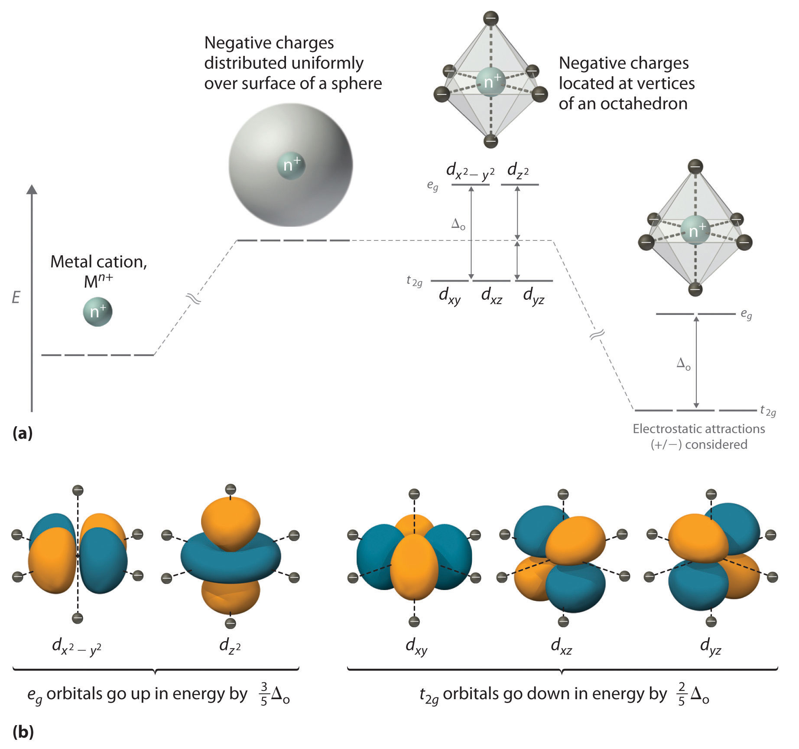(a) Distributing a charge of −6 uniformly over a spherical surface surrounding a metal ion causes the energy of all five d orbitals to increase due to electrostatic repulsions, but the five d orbitals remain degenerate. Placing a charge of −1 at each vertex of an octahedron causes the d orbitals to split into two groups with different energies: the and orbitals increase in energy, while the, dxy, dxz, and dyz orbitals decrease in energy. The average energy of the five d orbitals is the same as for a spherical distribution of a −6 charge, however. Attractive electrostatic interactions between the negatively charged ligands and the positively charged metal ion (far right) cause all five d orbitals to decrease in energy but does not affect the splittings of the orbitals. (b) The two eg orbitals (left) point directly at the six negatively charged ligands, which increases their energy compared with a spherical distribution of negative charge. In contrast, the three t2g orbitals (right) point between the negatively charged ligands, which decreases their energy compared with a spherical distribution of charge.
The difference in energy between the two sets of d orbitals is called the crystal field splitting energyThe difference in energy between the set of orbitals and and the set of orbitals , , that results when the five orbitals are placed in an octahedral crystal field. (Δo), where the subscript o stands for octahedral. As we shall see, the magnitude of the splitting depends on the charge on the metal ion, the position of the metal in the periodic table, and the nature of the ligands. (Crystal field splitting energy also applies to tetrahedral complexes: Δt.) It is important to note that the splitting of the d orbitals in a crystal field does not change the total energy of the five d orbitals: the two eg orbitals increase in energy by 0.6Δo, whereas the three t2g orbitals decrease in energy by 0.4Δo. Thus the total change in energy is 2(0.6Δo) + 3(−0.4Δo) = 0.
Crystal field splitting does not change the total energy of the d orbitals.
Thus far, we have considered only the effect of repulsive electrostatic interactions between electrons in the d orbitals and the six negatively charged ligands, which increases the total energy of the system and splits the d orbitals. Interactions between the positively charged metal ion and the ligands results in a net stabilization of the system, which decreases the energy of all five d orbitals without affecting their splitting (as shown at the far right in part (a) in Figure 23.10 "An Octahedral Arrangement of Six Negative Charges around a Metal Ion Causes the Five ").
We can use the d-orbital energy-level diagram in Figure 23.10 "An Octahedral Arrangement of Six Negative Charges around a Metal Ion Causes the Five " to predict electronic structures and some of the properties of transition-metal complexes. We start with the Ti3+ ion, which contains a single d electron, and proceed across the first row of the transition metals by adding a single electron at a time. We place additional electrons in the lowest-energy orbital available, while keeping their spins parallel as required by Hund’s rule. As shown in Figure 23.11 "The Possible Electron Configurations for Octahedral ", for d1–d3 systems—such as [Ti(H2O)6]3+, [V(H2O)6]3+, and [Cr(H2O)6]3+, respectively—the electrons successively occupy the three degenerate t2g orbitals with their spins parallel, giving one, two, and three unpaired electrons, respectively. We can summarize this for the complex [Cr(H2O)6]3+, for example, by saying that the chromium ion has a d3 electron configuration or, more succinctly, Cr3+ is a d3 ion.
Figure 23.11 The Possible Electron Configurations for Octahedral dn Transition-Metal Complexes (n = 1–10)
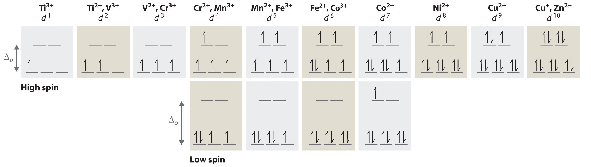Two different configurations are possible for octahedral complexes of metals with d4, d5, d6, and d7 configurations; the magnitude of Δo determines which configuration is observed.
When we reach the d4 configuration, there are two possible choices for the fourth electron: it can occupy either one of the empty eg orbitals or one of the singly occupied t2g orbitals. Recall from Chapter 6 "The Structure of Atoms" that placing an electron in an already occupied orbital results in electrostatic repulsions that increase the energy of the system; this increase in energy is called the spin-pairing energy (P)The energy that must be overcome to place an electron in an orbital that already has one electron.. If Δo is less than P, then the lowest-energy arrangement has the fourth electron in one of the empty eg orbitals. Because this arrangement results in four unpaired electrons, it is called a high-spin configuration, and a complex with this electron configuration, such as the [Cr(H2O)6]2+ ion, is called a high-spin complex. Conversely, if Δo is greater than P, then the lowest-energy arrangement has the fourth electron in one of the occupied t2g orbitals. Because this arrangement results in only two unpaired electrons, it is called a low-spin configuration, and a complex with this electron configuration, such as the [Mn(CN)6]3− ion, is called a low-spin complex. Similarly, metal ions with the d5, d6, or d7 electron configurations can be either high spin or low spin, depending on the magnitude of Δo.
In contrast, only one arrangement of d electrons is possible for metal ions with d8–d10 electron configurations. For example, the [Ni(H2O)6]2+ ion is d8 with two unpaired electrons, the [Cu(H2O)6]2+ ion is d9 with one unpaired electron, and the [Zn(H2O)6]2+ ion is d10 with no unpaired electrons.
If Δo is less than the spin-pairing energy, a high-spin configuration results. Conversely, if Δo is greater, a low-spin configuration forms.
The magnitude of Δo dictates whether a complex with four, five, six, or seven d electrons is high spin or low spin, which affects its magnetic properties, structure, and reactivity. Large values of Δo (i.e., Δo > P) yield a low-spin complex, whereas small values of Δo (i.e., Δo < P) produce a high-spin complex. As we noted, the magnitude of Δo depends on three factors: the charge on the metal ion, the principal quantum number of the metal (and thus its location in the periodic table), and the nature of the ligand. Values of Δo for some representative transition-metal complexes are given in Table 23.10 "Crystal Field Splitting Energies for Some Octahedral (Δ".
Table 23.10 Crystal Field Splitting Energies for Some Octahedral (Δo)* and Tetrahedral (Δt) Transition-Metal Complexes
| Octahedral Complexes | Δo (cm−1) | Octahedral Complexes | Δo (cm−1) | Tetrahedral Complexes | Δt (cm−1) |
|---|---|---|---|---|---|
| [Ti(H2O)6]3+ | 20,300 | [Fe(CN)6]4− | 32,800 | VCl4 | 9010 |
| [V(H2O)6]2+ | 12,600 | [Fe(CN)6]3− | 35,000 | [CoCl4]2− | 3300 |
| [V(H2O)6]3+ | 18,900 | [CoF6]3− | 13,000 | [CoBr4]2− | 2900 |
| [CrCl6]3− | 13,000 | [Co(H2O)6]2+ | 9300 | [CoI4]2− | 2700 |
| [Cr(H2O)6]2+ | 13,900 | [Co(H2O)6]3+ | 27,000 | ||
| [Cr(H2O)6]3+ | 17,400 | [Co(NH3)6]3+ | 22,900 | ||
| [Cr(NH3)6]3+ | 21,500 | [Co(CN)6]3− | 34,800 | ||
| [Cr(CN)6]3− | 26,600 | [Ni(H2O)6]2+ | 8500 | ||
| Cr(CO)6 | 34,150 | [Ni(NH3)6]2+ | 10,800 | ||
| [MnCl6]4− | 7500 | [RhCl6]3− | 20,400 | ||
| [Mn(H2O)6]2+ | 8500 | [Rh(H2O)6]3+ | 27,000 | ||
| [MnCl6]3− | 20,000 | [Rh(NH3)6]3+ | 34,000 | ||
| [Mn(H2O)6]3+ | 21,000 | [Rh(CN)6]3− | 45,500 | ||
| [Fe(H2O)6]2+ | 10,400 | [IrCl6]3− | 25,000 | ||
| [Fe(H2O)6]3+ | 14,300 | [Ir(NH3)6]3+ | 41,000 | ||
| *Energies obtained by spectroscopic measurements are often given in units of wave numbers (cm−1); the wave number is the reciprocal of the wavelength of the corresponding electromagnetic radiation expressed in centimeters: 1 cm−1 = 11.96 J/mol. | |||||
Source of data: Duward F. Shriver, Peter W. Atkins, and Cooper H. Langford, Inorganic Chemistry, 2nd ed. (New York: W. H. Freeman and Company, 1994).
Increasing the charge on a metal ion has two effects: the radius of the metal ion decreases, and negatively charged ligands are more strongly attracted to it. Both factors decrease the metal–ligand distance, which in turn causes the negatively charged ligands to interact more strongly with the d orbitals. Consequently, the magnitude of Δo increases as the charge on the metal ion increases. Typically, Δo for a tripositive ion is about 50% greater than for the dipositive ion of the same metal; for example, for [V(H2O)6]2+, Δo = 11,800 cm−1; for [V(H2O)6]3+, Δo = 17,850 cm−1.
For a series of complexes of metals from the same group in the periodic table with the same charge and the same ligands, the magnitude of Δo increases with increasing principal quantum number: Δo (3d) < Δo (4d) < Δo (5d). The data for hexaammine complexes of the trivalent group 9 metals illustrate this point:
The increase in Δo with increasing principal quantum number is due to the larger radius of valence orbitals down a column. In addition, repulsive ligand–ligand interactions are most important for smaller metal ions. Relatively speaking, this results in shorter M–L distances and stronger d orbital–ligand interactions.
Experimentally, it is found that the Δo observed for a series of complexes of the same metal ion depends strongly on the nature of the ligands. For a series of chemically similar ligands, the magnitude of Δo decreases as the size of the donor atom increases. For example, Δo values for halide complexes generally decrease in the order F− > Cl− > Br− > I− because smaller, more localized charges, such as we see for F−, interact more strongly with the d orbitals of the metal ion. In addition, a small neutral ligand with a highly localized lone pair, such as NH3, results in significantly larger Δo values than might be expected. Because the lone pair points directly at the metal ion, the electron density along the M–L axis is greater than for a spherical anion such as F−. The experimentally observed order of the crystal field splitting energies produced by different ligands is called the spectrochemical seriesAn ordering of ligands by their crystal field splitting energies., shown here in order of decreasing Δo:
The values of Δo listed in Table 23.10 "Crystal Field Splitting Energies for Some Octahedral (Δ" illustrate the effects of the charge on the metal ion, the principal quantum number of the metal, and the nature of the ligand.
The largest Δos are found in complexes of metal ions from the third row of the transition metals with charges of at least +3 and ligands with localized lone pairs of electrons.
The striking colors exhibited by transition-metal complexes are caused by excitation of an electron from a lower-energy d orbital to a higher-energy d orbital, which is called a d–d transition (Figure 23.12 "A "). For a photon to effect such a transition, its energy must be equal to the difference in energy between the two d orbitals, which depends on the magnitude of Δo.
Figure 23.12 A d–d Transition
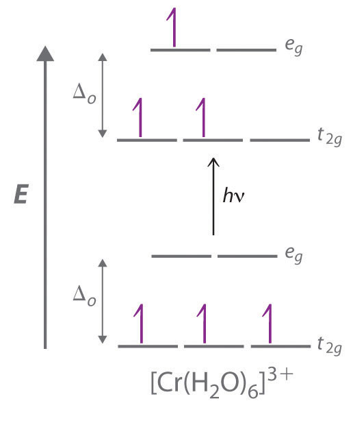In a d–d transition, an electron in one of the t2g orbitals of an octahedral complex such as the [Cr(H2O)6]3+ ion absorbs a photon of light with energy equal to Δo, which causes the electron to move to an empty or singly occupied eg orbital.
Recall from Chapter 6 "The Structure of Atoms" that the color we observe when we look at an object or a compound is due to light that is transmitted or reflected, not light that is absorbed, and that reflected or transmitted light is complementary in color to the light that is absorbed. Thus a green compound absorbs light in the red portion of the visible spectrum and vice versa, as indicated by the color wheel in End-of-Chapter Application Problem 6 in Chapter 6 "The Structure of Atoms". Because the energy of a photon of light is inversely proportional to its wavelength, the color of a complex depends on the magnitude of Δo, which depends on the structure of the complex. For example, the complex [Cr(NH3)6]3+ has strong-field ligands and a relatively large Δo. Consequently, it absorbs relatively high-energy photons, corresponding to blue-violet light, which gives it a yellow color. A related complex with weak-field ligands, the [Cr(H2O)6]3+ ion, absorbs lower-energy photons corresponding to the yellow-green portion of the visible spectrum, giving it a deep violet color.
We can now understand why emeralds and rubies have such different colors, even though both contain Cr3+ in an octahedral environment provided by six oxide ions. Although the chemical identity of the six ligands is the same in both cases, the Cr–O distances are different because the compositions of the host lattices are different (Al2O3 in rubies and Be3Al2Si6O18 in emeralds). In ruby, the Cr–O distances are relatively short because of the constraints of the host lattice, which increases the d orbital–ligand interactions and makes Δo relatively large. Consequently, rubies absorb green light and the transmitted or reflected light is red, which gives the gem its characteristic color. In emerald, the Cr–O distances are longer due to relatively large [Si6O18]12− silicate rings; this results in decreased d orbital–ligand interactions and a smaller Δo. Consequently, emeralds absorb light of a longer wavelength (red), which gives the gem its characteristic green color. It is clear that the environment of the transition-metal ion, which is determined by the host lattice, dramatically affects the spectroscopic properties of a metal ion.
Gem-quality crystals of ruby and emerald. The colors of both minerals are due to the presence of small amounts of Cr3+ impurities in octahedral sites in an otherwise colorless metal oxide lattice.
Recall from Chapter 9 "Molecular Geometry and Covalent Bonding Models" that stable molecules contain more electrons in the lower-energy (bonding) molecular orbitals in a molecular orbital diagram than in the higher-energy (antibonding) molecular orbitals. If the lower-energy set of d orbitals (the t2g orbitals) is selectively populated by electrons, then the stability of the complex increases. For example, the single d electron in a d1 complex such as [Ti(H2O)6]3+ is located in one of the t2g orbitals. Consequently, this complex will be more stable than expected on purely electrostatic grounds by 0.4Δo. The additional stabilization of a metal complex by selective population of the lower-energy d orbitals is called its crystal field stabilization energy (CFSE)The additional stabilization of a metal complex by selective population of the lower-energy orbitals (the t2g orbitals).. The CFSE of a complex can be calculated by multiplying the number of electrons in t2g orbitals by the energy of those orbitals (−0.4Δo), multiplying the number of electrons in eg orbitals by the energy of those orbitals (+0.6Δo), and summing the two. Table 23.11 "CFSEs for Octahedral Complexes with Different Electron Configurations (in Units of Δ" gives CFSE values for octahedral complexes with different d electron configurations. The CFSE is highest for low-spin d6 complexes, which accounts in part for the extraordinarily large number of Co(III) complexes known. The other low-spin configurations also have high CFSEs, as does the d3 configuration.
Table 23.11 CFSEs for Octahedral Complexes with Different Electron Configurations (in Units of Δo)
| High Spin | CFSE (Δo) | Low Spin | CFSE (Δo) | |||
|---|---|---|---|---|---|---|
| d 0 | 0 | |||||
| d 1 | ↿ | 0.4 | ||||
| d 2 | ↿ ↿ | 0.8 | ||||
| d 3 | ↿ ↿ ↿ | 1.2 | ||||
| d 4 | ↿ ↿ ↿ | ↿ | 0.6 | ↿⇂ ↿ ↿ | 1.6 | |
| d 5 | ↿ ↿ ↿ | ↿ ↿ | 0.0 | ↿⇂ ↿⇂ ↿ | 2.0 | |
| d 6 | ↿⇂ ↿ ↿ | ↿ ↿ | 0.4 | ↿⇂ ↿⇂ ↿⇂ | 2.4 | |
| d 7 | ↿⇂ ↿⇂ ↿ | ↿ ↿ | 0.8 | ↿⇂ ↿⇂ ↿⇂ | ↿ | 1.8 |
| d 8 | ↿⇂ ↿⇂ ↿⇂ | ↿ ↿ | 1.2 | |||
| d 9 | ↿⇂ ↿⇂ ↿⇂ | ↿⇂ ↿ | 0.6 | |||
| d 10 | ↿⇂ ↿⇂ ↿⇂ | ↿⇂ ↿⇂ | 0.0 | |||
CFSEs are important for two reasons. First, the existence of CFSE nicely accounts for the difference between experimentally measured values for bond energies in metal complexes and values calculated based solely on electrostatic interactions. Second, CFSEs represent relatively large amounts of energy (up to several hundred kilojoules per mole), which has important chemical consequences.
Octahedral d3 and d8 complexes and low-spin d6, d5, d7, and d4 complexes exhibit large CFSEs.
If two trans ligands in an octahedral complex are either chemically different from the other four, as in the trans-[Co(NH3)4Cl2]+ ion, or at a different distance from the metal than the other four, the result is a tetragonally distorted octahedral complex. The electronic structures of such complexes are best viewed as the result of distorting an octahedral complex. Consider, for example, an octahedral complex such as [Co(NH3)6]3+ and then slowly remove two trans NH3 molecules by moving them away from the metal along the ±z axes, as shown in the top half of Figure 23.13. As the two axial Co–N distances increase simultaneously, the d orbitals that interact most strongly with the two axial ligands will decrease in energy due to a decrease in electrostatic repulsions between electrons in these orbitals and the negative ends of the ligand dipoles. The affected d orbitals are those with a component along the ±z axes—namely, , dxz, and dyz. They will not be affected equally, however. Because the orbital points directly at the two ligands being removed, its energy will decrease much more rapidly than the energy of the other two, as shown in the bottom half of Figure 23.13. In addition, the positive charge on the metal will increase somewhat as the axial ligands are removed, causing the four remaining in-plane ligands to be more strongly attracted to the metal. This will increase their interactions with the other two d orbitals and increase their energy. Again, the two d orbitals will not be affected equally. Because the orbital points directly at the four in-plane ligands, its energy will increase more rapidly than the energy of the dxy orbital, which points between the in-plane ligands. If we remove the two axial ligands to an infinite distance, we obtain a square planar complex. The energies of the and dxy orbitals actually cross as the axial ligands are removed, and the largest orbital spliting in a square planar complex is identical in magnitude to Δo.
Figure 23.13 d-Orbital Splittings for Tetragonal and Square Planar Complexes
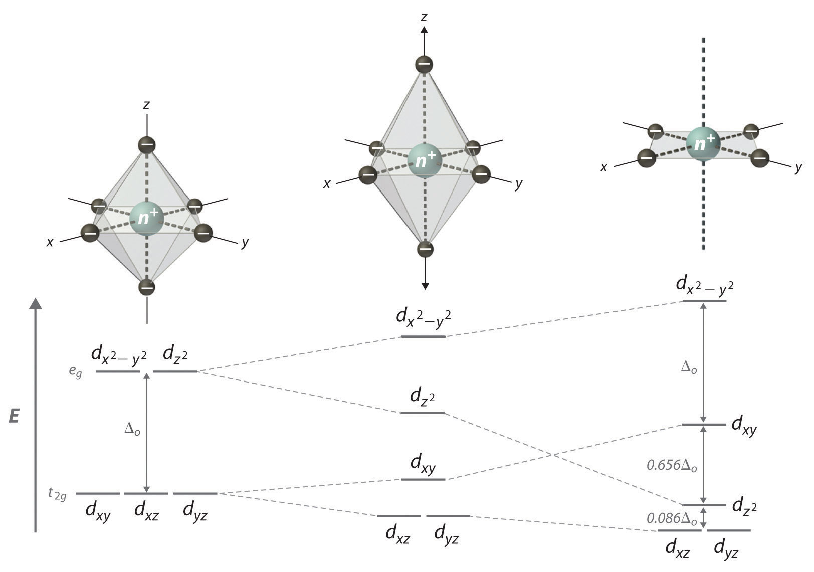Moving the two axial ligands away from the metal ion along the z axis initially gives an elongated octahedral complex (center) and eventually produces a square planar complex (right). As shown below the structures, an axial elongation causes the dxz and dyz orbitals to decrease in energy and the and dxy orbitals to increase in energy. As explained in the text, the change in energy is not the same for all five d orbitals. Removing the two axial ligands completely causes the energy of the orbital to decrease so much that the order of the and dxy orbitals is reversed.
In a tetrahedral arrangement of four ligands around a metal ion, none of the ligands lies on any of the three coordinate axes (part (a) in Figure 23.14); consequently, none of the five d orbitals points directly at the ligands. Nonetheless, the dxy, dxz, and dyz orbitals interact more strongly with the ligands than do and again resulting in a splitting of the five d orbitals into two sets. The splitting of the energies of the orbitals in a tetrahedral complex (Δt) is much smaller than that for Δo, however, for two reasons. First, the d orbitals interact less strongly with the ligands in a tetrahedral arrangement. Second, there are only four negative charges rather than six, which decreases the electrostatic interactions by one-third if all other factors are equal. It can be shown that, for complexes of the same metal ion with the same charge, the same ligands, and the same M–L distance, The relationship between the splitting of the five d orbitals in octahedral and tetrahedral crystal fields imposed by the same ligands is shown schematically in part (b) in Figure 23.14.
Figure 23.14 d-Orbital Splittings for a Tetrahedral Complex
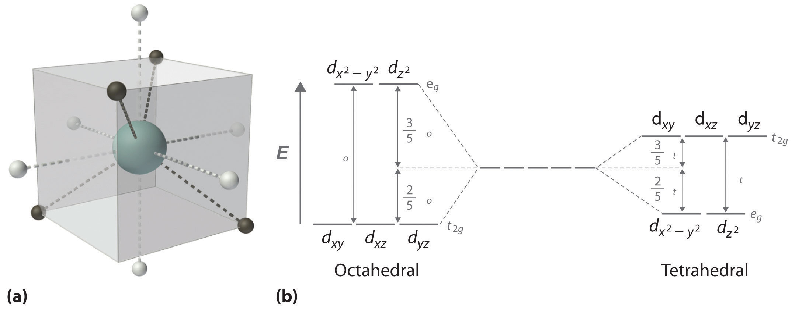(a) In a tetrahedral complex, none of the five d orbitals points directly at or between the ligands. (b) Because the dxy, dxz, and dyz orbitals (the t2g orbitals) interact more strongly with the ligands than do the and orbitals (the eg orbitals), the order of orbital energies in a tetrahedral complex is the opposite of the order in an octahedral complex.
Δt < Δo because of weaker d-orbital–ligand interactions and decreased electrostatic interactions.
Because Δo is so large for the second- and third-row transition metals, all four-coordinate complexes of these metals are square planar due to the much higher CFSE for square planar versus tetrahedral structures. The only exception is for d10 metal ions such as Cd2+, which have zero CFSE and are therefore tetrahedral as predicted by the VSEPR model. Four-coordinate complexes of the first-row transition metals can be either square planar or tetrahedral. The former is favored by strong-field ligands, whereas the latter is favored by weak-field ligands. For example, the [Ni(CN)4]2− ion is square planar, while the [NiCl4]2− ion is tetrahedral.
For each complex, predict its structure, whether it is high spin or low spin, and the number of unpaired electrons present.
Given: complexes
Asked for: structure, high spin versus low spin, and the number of unpaired electrons
Strategy:
A From the number of ligands, determine the coordination number of the compound.
B Classify the ligands as either strong field or weak field and determine the electron configuration of the metal ion.
C Predict the relative magnitude of Δo and decide whether the compound is high spin or low spin.
D Place the appropriate number of electrons in the d orbitals and determine the number of unpaired electrons.
Solution:
A With six ligands, we expect this complex to be octahedral.
B The fluoride ion is a small anion with a concentrated negative charge, but compared with ligands with localized lone pairs of electrons, it is weak field. The charge on the metal ion is +3, giving a d6 electron configuration.
C Because of the weak-field ligands, we expect a relatively small Δo, making the compound high spin.
D In a high-spin octahedral d6 complex, the first five electrons are placed individually in each of the d orbitals with their spins parallel, and the sixth electron is paired in one of the t2g orbitals, giving four unpaired electrons.
A This complex has four ligands, so it is either square planar or tetrahedral.
B C Because rhodium is a second-row transition metal ion with a d8 electron configuration and CO is a strong-field ligand, the complex is likely to be square planar with a large Δo, making it low spin. Because the strongest d-orbital interactions are along the x and y axes, the orbital energies increase in the order dyz, and dxz (these are degenerate); dxy; and
D The eight electrons occupy the first four of these orbitals, leaving the orbital empty. Thus there are no unpaired electrons.
Exercise
For each complex, predict its structure, whether it is high spin or low spin, and the number of unpaired electrons present.
Answer:
The splitting of the d orbitals because of their interaction with the ligands in a complex has important consequences for the chemistry of transition-metal complexes; they can be divided into structural effects and thermodynamic effects. Although the two kinds of effects are interrelated, we will consider them separately.
There are two major kinds of structural effects: effects on the ionic radius of metal ions with regular octahedral or tetrahedral geometries, and structural distortions that are observed for specific electron configurations.
Figure 23.15 "The Effect of " is a plot of the ionic radii of the divalent fourth-period metal ions versus atomic number. Only Ca2+(d0), Mn2+ (high-spin d5), and Zn2+ (d10) fall on the smooth curve calculated based on the effective nuclear charge (Zeff), which assumes that the distribution of d electrons is spherically symmetrical. All the other divalent ions fall below this curve because they have asymmetrical distributions of d electrons. (The points shown for Cr2+ and Cu2+ are only estimated values; as you will learn shortly, these two ions do not form any truly octahedral complexes.) To see why an asymmetrical distribution of d electrons makes a metal ion smaller than expected, consider the Ti2+ ion, which has a d2 configuration with both electrons in the t2g orbitals. Because the t2g orbitals are directed between the ligands, the two d electrons are unable to shield the ligands from the nuclear charge. Consequently, the ligands experience a higher effective nuclear charge than expected, the metal–ligand distance is unusually short, and the ionic radius is smaller than expected. If instead the two electrons were distributed uniformly over all five d orbitals, they would be much more effective at screening the ligands from the nuclear charge, making the metal–ligand distances longer and giving a larger ionic radius.
Figure 23.15 The Effect of d-Orbital Splittings on the Radii of the Divalent Ions of the Fourth-Period Metals
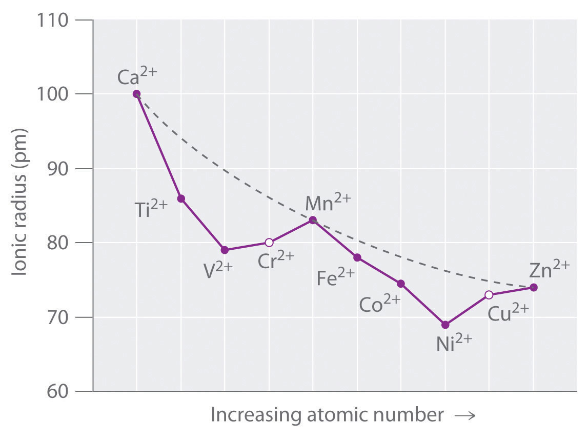Because these radii are based on the structures of octahedral complexes and Cr2+ and Cu2+ do not form truly octahedral complexes, the points for these ions are shown as open circles. The dashed line represents the behavior predicted based on the effects of screening and variation in effective nuclear charge (Zeff), assuming a spherical distribution of the 3d electrons.
A similar effect is observed for the V2+ ion, which has a d3 configuration. Because the three electrons in the t2g orbitals provide essentially no shielding of the ligands from the metal, the ligands experience the full increase of +1 in nuclear charge that occurs in going from Ti2+ to V2+. Consequently, the observed ionic radius of the V2+ ion is significantly smaller than that of the Ti2+ ion.
Skipping the Cr2+ ion for the moment, we next consider the d5 Mn2+ ion. Because the nuclear charge increases by +2 from V2+ to Mn2+, we might expect Mn2+ to be smaller than V2+. The two electrons that are also added from V2+ to Mn2+ occupy the eg orbitals, however, which point directly at the six ligands. Because these electrons are localized directly between the metal ion and the ligands, they are effective at screening the ligands from the increased nuclear charge. As a result, the ionic radius actually increases significantly as we go from V2+ to Mn2+, despite the higher nuclear charge of the latter.
Exactly the same effects are seen in the second half of the first-row transition metals. In the Fe2+, Co2+, and Ni2+ ions, the extra electrons are added successively to the t2g orbitals, resulting in poor shielding of the ligands from the nuclear charge and abnormally small ionic radii. Skipping over Cu2+, we again see that adding the last two electrons causes a significant increase in the ionic radius of Zn2+, despite its higher nuclear charge.
Because simple octahedral complexes are not known for the Cr2+ and Cu2+ ions, only estimated values for their radii are shown in Figure 23.15 "The Effect of ". We see in Figure 23.11 "The Possible Electron Configurations for Octahedral " that both the Cr2+ and Cu2+ ions have electron configurations with an odd number of electrons in the eg orbitals. Because the single electron (in the case of Cr2+) or the third electron (in the case of Cu2+) can occupy either one of two degenerate eg orbitals, they have what is called a degenerate ground state. The Jahn–Teller theoremA theory that states that a non-linear molecule with a spatially degenerate electronic ground state will undergo a geometrical distortion to remove the degeneracy and lower the overall energy of the system. states that such non-linear systems are not stable; they will undergo a distortion that makes the complex less symmetrical and splits the degenerate states, which decreases the energy of the system. The distortion and resulting decrease in energy are collectively referred to as the Jahn–Teller effect. Neither the nature of the distortion nor its magnitude is specified, and in fact, they are difficult to predict. In principle, Jahn–Teller distortions are possible for many transition-metal ions; in practice, however, they are observed only for systems with an odd number of electrons in the eg orbitals, such as the Cr2+ and Cu2+ ions.
To see how a geometrical distortion can decrease the energy of such a system, consider an octahedral Cu2+ complex, the [Cu(H2O)6]2+ ion, which has been elongated along the z axis. As indicated in Figure 23.16 "The Jahn–Teller Effect", this kind of distortion splits both the eg and t2g sets of orbitals. Because the axial ligands interact most strongly with the orbital, the splitting of the eg set (δ1) is significantly larger than the splitting of the t2g set (δ2), but both δ1 and δ2 are much, much smaller than the Δo. This splitting does not change the center of gravity of the energy within each set, so a Jahn–Teller distortion results in no net change in energy for a filled or half-filled set of orbitals. If, however, the eg set contains one (as in the d4 ions, Cr2+ and Mn3+) or three (as in the d9 ion, Cu2+) electrons, the distortion decreases the energy of the system. For Cu2+, for example, the change in energy after distortion is 2(−δ1/2) + 1(δ1/2) = −δ1/2. For Cu2+ complexes, the observed distortion is always an elongation along the z axis by as much as 50 pm; in fact, many Cu2+ complexes are so distorted that they are effectively square planar. In contrast, the distortion observed for most Cr2+ complexes is a compression along the z axis. In both cases, however, the net effect is the same: the distorted system is more stable than the undistorted system.
Jahn–Teller distortions are most important for d9 and high-spin d4 complexes; the distorted system is more stable than the undistorted one.
Figure 23.16 The Jahn–Teller Effect
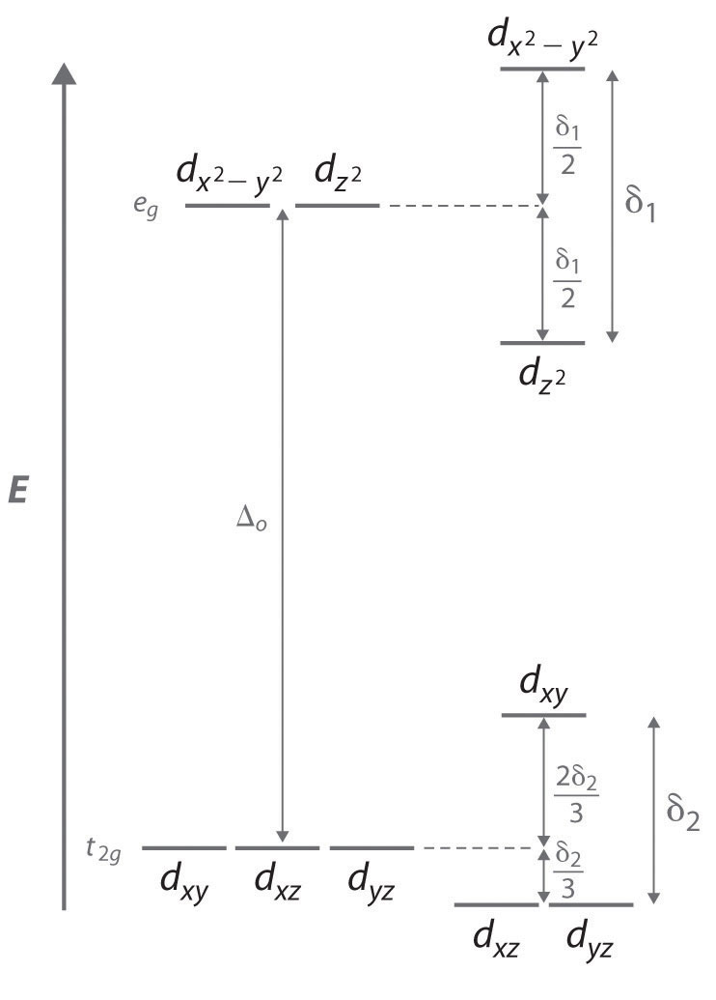Increasing the axial metal–ligand distances in an octahedral d9 complex is an example of a Jahn–Teller distortion, which causes the degenerate pair of eg orbitals to split in energy by an amount δ1; δ1 and δ2 are much smaller than Δo. As a result, the distorted system is more stable (lower in energy) than the undistorted complex by δ1/2.
As we previously noted, CFSEs can be as large as several hundred kilojoules per mole, which is the same magnitude as the strength of many chemical bonds or the energy change in most chemical reactions. Consequently, CFSEs are important factors in determining the magnitude of hydration energies, lattice energies, and other thermodynamic properties of the transition metals.
The hydration energy of a metal ion is defined as the change in enthalpy for the following reaction:
Equation 23.12
M2+(g) + H2O(l) → M2+(aq)Although hydration energies cannot be measured directly, they can be calculated from experimentally measured quantities using thermochemical cycles. As shown in part (a) in Figure 23.17 "Thermochemical Effects of ", a plot of the hydration energies of the fourth-period metal dications versus atomic number gives a curve with two valleys. Note the relationship between the plot in part (a) in Figure 23.17 "Thermochemical Effects of " and the plot of ionic radii in Figure 23.15 "The Effect of ": the overall shapes are essentially identical, and only the three cations with spherically symmetrical distributions of d electrons (Ca2+, Mn2+, and Zn2+) lie on the dashed lines. In part (a) in Figure 23.17 "Thermochemical Effects of ", the dashed line corresponds to hydration energies calculated based solely on electrostatic interactions. Subtracting the CFSE values for the [M(H2O)6]2+ ions from the experimentally determined hydration energies gives the points shown as open circles, which lie very near the calculated curve. Thus CFSEs are primarily responsible for the differences between the measured and calculated values of hydration energies.
Figure 23.17 Thermochemical Effects of d-Orbital Splittings
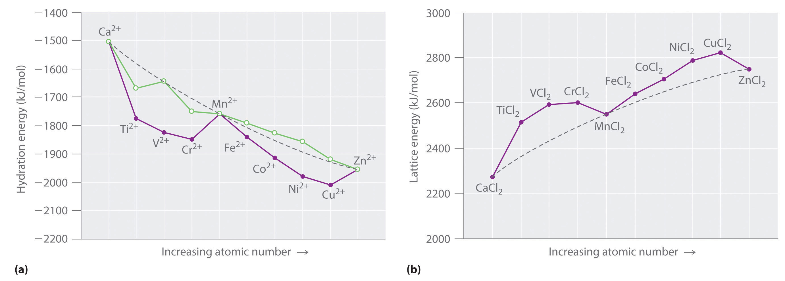(a) A plot of the hydration energies of the divalent fourth-period metal ions versus atomic number (solid circles) shows large deviations from the smooth curve calculated, assuming a spherical distribution of d electrons (dashed line). Correcting for CFSE gives the points shown as open circles, which, except for Ti2+ and Cr2+, are close to the calculated values. The apparent deviations for these ions are caused by the fact that solutions of the Ti2+ ion in water are not stable, and Cr2+ does not form truly octahedral complexes. (b) A plot of the lattice energies for the fourth-period metal dichlorides versus atomic number shows similar deviations from the smooth curve calculated, assuming a spherical distribution of d electrons (dashed lines), again illustrating the importance of CFSEs.
Values of the lattice energies for the fourth-period metal dichlorides are plotted versus atomic number in part (b) in Figure 23.17 "Thermochemical Effects of ". Recall that the lattice energy is defined as the negative of the enthalpy change for the following reaction. Like hydration energies, lattice energies are determined indirectly by using a thermochemical cycle:
Equation 23.13
M2+(g) + 2Cl−(g) → MCl2(s)The shape of the lattice-energy curve is essentially the mirror image of the hydration-energy curve in part (a) in Figure 23.19 "Ferritin, an Iron Storage Protein", with only Ca2+, Mn2+, and Zn2+ lying on the smooth curve. It is not surprising that the explanation for the deviations from the curve is exactly the same as for the hydration energy data: all the transition-metal dichlorides, except MnCl2 and ZnCl2, are more stable than expected due to CFSE.
Crystal field theory (CFT) is a bonding model that explains many properties of transition metals that cannot be explained using valence bond theory. In CFT, complex formation is assumed to be due to electrostatic interactions between a central metal ion and a set of negatively charged ligands or ligand dipoles arranged around the metal ion. Depending on the arrangement of the ligands, the d orbitals split into sets of orbitals with different energies. The difference between the energy levels in an octahedral complex is called the crystal field splitting energy (Δo), whose magnitude depends on the charge on the metal ion, the position of the metal in the periodic table, and the nature of the ligands. The spin-pairing energy (P) is the increase in energy that occurs when an electron is added to an already occupied orbital. A high-spin configuration occurs when the Δo is less than P, which produces complexes with the maximum number of unpaired electrons possible. Conversely, a low-spin configuration occurs when the Δo is greater than P, which produces complexes with the minimum number of unpaired electrons possible. Strong-field ligands interact strongly with the d orbitals of the metal ions and give a large Δo, whereas weak-field ligands interact more weakly and give a smaller Δo. The colors of transition-metal complexes depend on the environment of the metal ion and can be explained by CFT. Distorting an octahedral complex by moving opposite ligands away from the metal produces a tetragonal or square planar arrangement, in which interactions with equatorial ligands become stronger. Because none of the d orbitals points directly at the ligands in a tetrahedral complex, these complexes have smaller values of the crystal field splitting energy Δt. The crystal field stabilization energy (CFSE) is the additional stabilization of a complex due to placing electrons in the lower-energy set of d orbitals. CFSE explains the unusual curves seen in plots of ionic radii, hydration energies, and lattice energies versus atomic number. The Jahn–Teller theorem states that a non-linear molecule with a spatially degenerate electronic ground state will undergo a geometrical distortion to remove the degeneracy and lower the overall energy of the system.
Describe crystal field theory in terms of its
In CFT, what causes degenerate sets of d orbitals to split into different energy levels? What is this splitting called? On what does the magnitude of the splitting depend?
Will the value of Δo increase or decrease if I− ligands are replaced by NO2− ligands? Why?
For an octahedral complex of a metal ion with a d6 configuration, what factors favor a high-spin configuration versus a low-spin configuration?
How can CFT explain the color of a transition-metal complex?
Do strong-field ligands favor a tetrahedral or a square planar structure? Why?
For each complex, predict its structure, whether it is high spin or low spin, and the number of unpaired electrons present.
For each complex, predict its structure, whether it is high spin or low spin, and the number of unpaired electrons present.
The ionic radii of V2+, Fe2+, and Zn2+ are all roughly the same (approximately 76 pm). Given their positions in the periodic table, explain why their ionic radii are so similar.
In Chapter 1 "Introduction to Chemistry", you learned that 19 of the elements in the periodic table are essential elements that are necessary for most organisms, including humans, and in Chapter 7 "The Periodic Table and Periodic Trends" we discussed some of the biological functions of these elements. In this section, we describe several systems that illustrate the roles transition metals play in biological systems. Our goal is for you to understand why the chemical properties of these elements make them essential for life. We begin with a discussion of the strategies organisms use to extract transition metals from their environment. The section continues with a brief discussion of the use of transition metals in reactions that involve the transfer of electrons, reactions of small molecules such as O2, Lewis-acid catalysis, and the generation of reactive organic radicals.
In Chapter 1 "Introduction to Chemistry", we described the three possible dietary levels for any essential element: deficient, optimal, and toxic, in order of increasing concentration in the diet (Figure 1.27 "Possible Concentrations of an Essential Element in the Diet"). If the concentration of an essential element in the diet is too low, an organism must be able to extract the element from the environment and concentrate it. If the concentration of an essential element in the diet is too high, an organism must be able to limit its intake to avoid toxic effects. Moreover, organisms must be able to switch off the uptake process rapidly if dietary levels rise suddenly, and they must be able to store essential elements for future use.
Three distinct steps are involved in transition metal uptake. First, the metal must be “mobilized” from the environment and brought into contact with a cell in a form that can be absorbed. Second, the metal must be transported across the cell membrane into the cell. Third, the element must be transported to its point of utilization within a cell or to other cells within the organism. In our discussion, we focus on the uptake, transport, and storage of iron, which illustrates the most important points. Because iron deficiency (anemia) is the most widespread nutritional deficiency known in humans, the uptake of iron is especially well understood.
Iron complexes in biological systems. Iron(III) forms very stable octahedral complexes with hydroxamate and catecholate ligands.
In Chapter 17 "Solubility and Complexation Equilibriums", you learned that the solubility of metal ions such as Fe3+, which form highly insoluble hydroxides, depends on the pH and the presence of complexing agents. In an oxygen-containing atmosphere, iron exists as Fe(III) because of the positive reduction potential of Fe3+ (Fe3+ + e− → Fe2+; E° = +0.77 V). Because ferric hydroxide [Fe(OH)3] is highly insoluble (Ksp ≈ 1 × 10−39), the equilibrium concentration of Fe3+(aq) at pH 7.0 is very low, about 10−18 M. You would have to drink 2 × 1013 L of iron-saturated water per day (roughly 5 mi3) to consume the recommended daily intake of Fe for humans, which is about 1 mg/day. Animals such as humans can overcome this problem by consuming concentrated sources of iron, such as red meat, but microorganisms cannot.
Consequently, most microorganisms synthesize and secrete organic molecules called siderophoresAn organic ligand that has a high affinity for Fe(III) and is secreted into the surrounding medium to increase the total concentration of dissolved iron. to increase the total concentration of available iron in the surrounding medium. Siderophores are generally cyclic compounds that use bidentate ligands, such as the hydroxamate and catecholate groups shown here, to bind Fe3+ in an octahedral arrangement. Typical siderophores are ferrichrome, a cyclic peptide produced by fungi, and enterobactin, a cyclic ester produced by bacteria (Figure 23.18 "Siderophores"). Attaching the three iron ligands to a cyclic framework greatly increases the stability of the resulting Fe3+ complex due to the chelate effect described in Section 23.4 "Coordination Compounds". The formation constants for the Fe3+ complexes of ferrichrome and enterobactin are about 1032 and 1040, respectively, which are high enough to allow them to dissolve almost any Fe(III) compound.
Figure 23.18 Siderophores
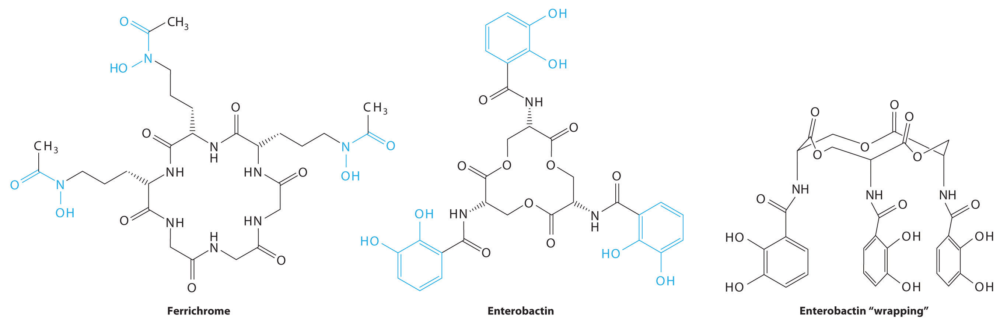Ferrichrome (a) and enterobactin (b) are siderophores that use hydroxamate and catecholate ligands, respectively, to bind Fe3+. The “wrapped” drawing of enterobactin (c) shows how the cyclic ester framework places the three catecholate ligands in the correct orientation to bind to a single Fe3+ ion, which is an application of the chelate effect. The actual structure of ferrichrome is similar to that of enterobactin, with the three hydroxamate ligands adjacent to one another for optimal binding of Fe3+. Note: For clarity, most or all hydrogen atoms have been omitted in this and the following structures.
Siderophores increase the [Fe3+] in solution, providing the bacterium that synthesized them (as well as any competitors) with a supply of iron. In addition, siderophores neutralize the positive charge on the metal ion and provide a hydrophobic “wrapping” that enables the Fe3+–siderophore complex to be recognized by a specific protein that transports it into the interior of a cell. Once it is inside a cell, the iron is reduced to Fe2+, which has a much lower affinity for the siderophore and spontaneously dissociates.
In contrast, multicellular organisms can increase the concentration of iron in their diet by lowering the pH in the gastrointestinal tract. At pH 1.0 (the approximate pH of the stomach), most Fe(III) salts dissolve to form Fe3+(aq), which is absorbed by specific proteins in the intestinal wall. A protein called transferrin forms a complex with iron(III), allowing it to be transported to other cells. Proteins that bind tightly to Fe(III) can also be used as antibacterial agents because iron is absolutely essential for bacterial growth. For example, milk, tears, and egg white all contain proteins similar to transferrin, and their high affinity for Fe3+ allows them to sequester iron, thereby preventing bacteria from growing in these nutrient-rich media.
Iron is released from transferrin by reduction to Fe2+, and then it is either used immediately (e.g., for the synthesis of hemoglobin) or stored in a very large protein called ferritin for future use (Figure 23.19 "Ferritin, an Iron Storage Protein"). Ferritin uses oxygen to oxidize Fe2+ to Fe3+, which at neutral pH precipitates in the central cavity of the protein as a polymeric mixture of Fe(OH)3 and FePO4. Because a fully loaded ferritin molecule can contain as many as 4500 Fe atoms, which corresponds to about 25% Fe by mass, ferritin is an effective way to store iron in a highly concentrated form. When iron is needed by a cell, the Fe3+ is reduced to the much more soluble Fe2+ by a reductant such as ascorbic acid (vitamin C). The structure of ferritin contains channels at the junctions of the subunits, which provide pathways for iron to enter and leave the interior of a molecule.
Figure 23.19 Ferritin, an Iron Storage Protein

A schematic drawing of the structure of iron-loaded ferritin, showing the almost spherical protein shell inside which the iron hydroxide/phosphate core is formed.
A protein that contains one or more metal ions tightly bound to amino acid side chains is called a metalloproteinA protein that contains one or more tightly bound metal ions.; some of the most common ligands provided by amino acids are shown here. A metalloprotein that catalyzes a chemical reaction is a metalloenzymeA protein that contains one or more tightly bound metal ions and catalyzes a biochemical reaction.. Thus all metalloenzymes are metalloproteins, but the converse is not true. Recent estimates suggest that more than 40% of all known enzymes require at least one metal ion for activity, including almost all the enzymes responsible for the synthesis, duplication, and repair of DNA (deoxyribonucleic acid) and RNA (ribonucleic acid).
Ligands used in biological systems. These metal ligands are commonly found in metalloproteins.
Proteins whose function is to transfer electrons from one place to another are called electron-transfer proteins. Because they do not catalyze a chemical reaction, electron-transfer proteins are not enzymes; they are biochemical reductants or oxidants consumed in an enzymatic reaction. The general reaction for an electron-transfer protein is as follows:
Equation 23.14
Because many transition metals can exist in more than one oxidation state, electron-transfer proteins usually contain one or more metal ions that can undergo a redox reaction. Incorporating a metal ion into a protein has three important biological consequences:
Three important classes of metalloproteins transfer electrons: blue copper proteins, cytochromes, and iron–sulfur proteins, which generally transfer electrons at high (> 0.20 V), intermediate (±0 V), and low (−0.20 to −0.50 V) potentials, respectively (Table 23.12 "Some Properties of the Most Common Electron-Transfer Proteins"). Although these electron-transfer proteins contain different metals with different structures, they are all designed to ensure rapid electron transfer to and from the metal. Thus when the protein collides with its physiological oxidant or reductant, electron transfer can occur before the two proteins diffuse apart. For electron transfer to be rapid, the metal sites in the oxidized and reduced forms of the protein must have similar structures.
Table 23.12 Some Properties of the Most Common Electron-Transfer Proteins
| Protein | Metal Center | M/e− Transferred | Reduction Potential (V) |
|---|---|---|---|
| iron–sulfur proteins* | [Fe(SR)4]2− | 1 Fe | −0.1 to +0.1 |
| [(RS)2FeS2Fe(SR)2]2− | 2 Fe | −0.2 to −0.4 | |
| [Fe3S4(SR)3]3− | 3 Fe | −0.1 to −0.2 | |
| [Fe4S4(SR)4]2− | 4 Fe | −0.3 to −0.5 | |
| cytochromes | Fe-heme (low spin) | 1 Fe | ~0 |
| blue copper proteins† | [Cu(Im)2(SR)(SR2)]− | 1 Cu | ≥ +0.20 |
| * A sulfur bound to an organic group is represented as SR. | |||
| † See Figure 23.20 "A Blue Copper Protein" for the structure of imidazole (Im). | |||
Figure 23.20 A Blue Copper Protein
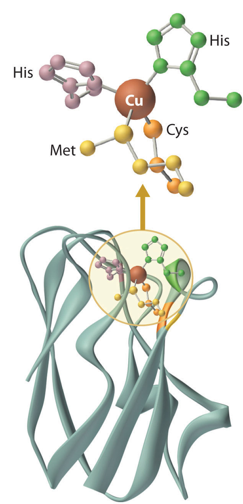In both the oxidized and reduced forms of a blue copper protein, the copper is coordinated by four ligands (two histidine imidazole nitrogen atoms, a cysteine thiolate sulfur, and a thioether sulfur of a methionine) in a roughly tetrahedral arrangement.
Blue copper proteins were first isolated from bacteria in the 1950s and from plant tissues in the early 1960s. The intense blue color of these proteins is due to a strong absorption band at a wavelength of about 600 nm. Although simple Cu2+ complexes, such as [Cu(H2O)6]2+ and [Cu(NH3)4]2+, are also blue due to an absorption band at 600 nm, the intensity of the absorption band is about 100 times less than that of a blue copper protein. Moreover, the reduction potential for the Cu2+/Cu+ couple in a blue copper protein is usually +0.3 to +0.5 V, considerably more positive than that of the aqueous Cu2+/Cu+ couple (+0.15 V).
The copper center in blue copper proteins has a distorted tetrahedral structure, in which the copper is bound to four amino acid side chains (Figure 23.20 "A Blue Copper Protein"). Although the most common structures for four-coordinate Cu2+ and Cu+ complexes are square planar and tetrahedral, respectively, the structures of the oxidized (Cu2+) and reduced (Cu+) forms of the protein are essentially identical. Thus the protein forces the Cu2+ ion to adopt a higher-energy structure that is more suitable for Cu+, which makes the Cu2+ form easier to reduce and raises its reduction potential.
Moreover, by forcing the oxidized and reduced forms of the metal complex to have essentially the same structure, the protein ensures that electron transfer to and from the copper site is rapid because only minimal structural reorganization of the metal center is required. Kinetics studies on simple metal complexes have shown that electron-transfer reactions tend to be slow when the structures of the oxidized and reduced forms of a metal complex are very different, and fast when they are similar. You will see that other metal centers used for biological electron-transfer reactions are also set up for minimal structural reorganization after electron transfer, which ensures the rapid transfer of electrons.
The cytochromes (from the Greek cytos, meaning “cell”, and chroma, meaning “color”) were first identified in the 1920s by spectroscopic studies of cell extracts. Based on the wavelength of the maximum absorption in the visible spectrum, they were classified as cytochromes a (with the longest wavelength), cytochromes b (intermediate wavelength), and cytochromes c (shortest wavelength). It quickly became apparent that there was a correlation between their spectroscopic properties and other physical properties. For examples, cytochromes c are generally small, soluble proteins with a reduction potential of about +0.25 V, whereas cytochromes b are larger, less-soluble proteins with reduction potentials of about 0 V.
All cytochromes contain iron, and the iron atom in all cytochromes is coordinated by a planar array of four nitrogen atoms provided by a cyclic tetradentate ligand called a porphyrin. The iron–porphyrin unit is called a heme group. The structures of a typical porphyrin (protoporphyrin IX) and its iron complex (protoheme) are shown here. In addition to the four nitrogen atoms of the porphyrin, the iron in a cytochrome is usually bonded to two additional ligands provided by the protein, as shown in Figure 23.21 "A Cytochrome ".
A cytochrome. Shown here is protoporphyrin IX and its iron complex, protoheme.
Figure 23.21 A Cytochrome c
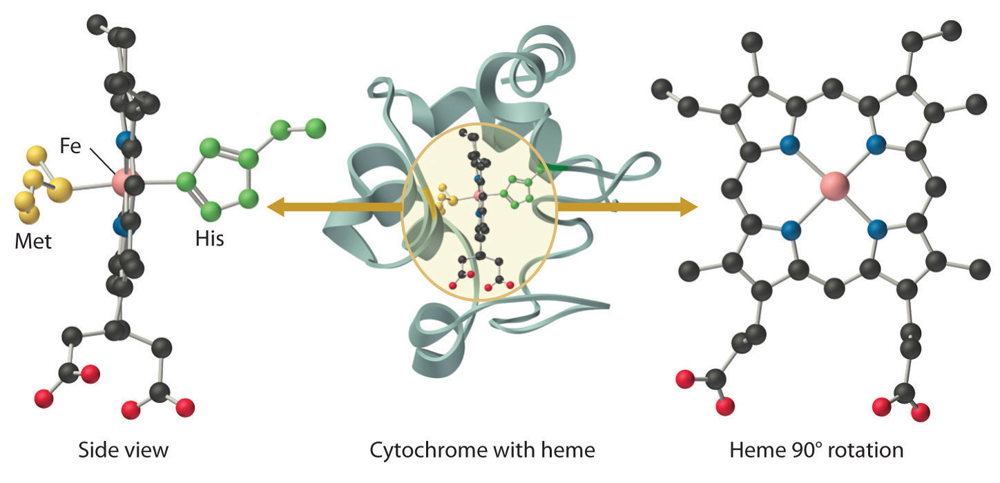In a cytochrome c, the heme iron is coordinated to the nitrogen atom of a histidine imidazole and the sulfur atom of a methionine thioether, in addition to the four nitrogen atoms provided by the porphyrin.
In contrast to the blue copper proteins, two electron configurations are possible for both the oxidized and reduced forms of a cytochrome, and this has significant structural consequences. Thus Fe2+ is d6 and can be either high spin (with four unpaired electrons) or low spin (with no unpaired electrons; Figure 23.11 "The Possible Electron Configurations for Octahedral "). Similarly, Fe3+ is d5 and can also be high spin (with five unpaired electrons) or low spin (with one unpaired electron). In low-spin heme complexes, both the Fe2+ and the Fe3+ ions are small enough to fit into the “hole” in the center of the porphyrin; hence the iron atom lies almost exactly in the plane of the four porphyrin nitrogen atoms in both cases. Because cytochromes b and c are low spin in both their oxidized and reduced forms, the structures of the oxidized and reduced cytochromes are essentially identical. Hence minimal structural changes occur after oxidation or reduction, which makes electron transfer to or from the heme very rapid.
Electron transfer reactions occur most rapidly when minimal structural changes occur during oxidation or reduction.
Although all known bacteria, plants, and animals use iron–sulfur proteins to transfer electrons, the existence of these proteins was not recognized until the late 1950s. Iron–sulfur proteins transfer electrons over a wide range of reduction potentials, and their iron content can range from 1 to more than 12 Fe atoms per protein molecule. In addition, most iron–sulfur proteins contain stoichiometric amounts of sulfide (S2−).
These properties are due to the presence of four different kinds of iron–sulfur units, which contain one, two, three, or four iron atoms per Fe–S complex (Figure 23.22 "Fe–S Centers in Proteins"). In all cases, the Fe2+ and Fe3+ ions are coordinated to four sulfur ligands in a tetrahedral environment. Due to tetrahedral coordination by weak-field sulfur ligands, the iron is high spin in both the Fe3+ and Fe2+ oxidation states, which results in similar structures for the oxidized and reduced forms of the Fe–S complexes. Consequently, only small structural changes occur after oxidation or reduction of the Fe–S center, which results in rapid electron transfer.
Figure 23.22 Fe–S Centers in Proteins
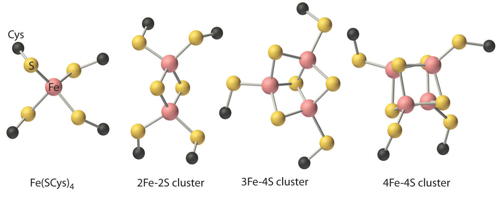Four kinds of iron–sulfur centers, containing one, two, three, and four iron atoms, respectively, are known in electron-transfer proteins. Although they differ in the number of sulfur atoms provided by cysteine thiolates versus sulfide, in all cases the iron is coordinated to four sulfur ligands in a roughly tetrahedral environment.
Although small molecules, such as O2, N2, and H2, do not react with organic compounds under ambient conditions, they do react with many transition-metal complexes. Consequently, virtually all organisms use metalloproteins to bind, transport, and catalyze the reactions of these molecules. Probably the best-known example is hemoglobin, which is used to transport O2 in many multicellular organisms.
Under ambient conditions, small molecules, such as O2, N2, and H2, react with transition-metal complexes but not with organic compounds.
Many microorganisms and most animals obtain energy by respiration, the oxidation of organic or inorganic molecules by O2. At 25°C, however, the concentration of dissolved oxygen in water in contact with air is only about 0.25 mM. Because of their high surface area-to-volume ratio, aerobic microorganisms can obtain enough oxygen for respiration by passive diffusion of O2 through the cell membrane. As the size of an organism increases, however, its volume increases much more rapidly than its surface area, and the need for oxygen depends on its volume. Consequently, as a multicellular organism grows larger, its need for O2 rapidly outstrips the supply available through diffusion. Unless a transport system is available to provide an adequate supply of oxygen for the interior cells, organisms that contain more than a few cells cannot exist. In addition, O2 is such a powerful oxidant that the oxidation reactions used to obtain metabolic energy must be carefully controlled to avoid releasing so much heat that the water in the cell boils. Consequently, in higher-level organisms, the respiratory apparatus is located in internal compartments called mitochondria, which are the power plants of a cell. Oxygen must therefore be transported not only to a cell but also to the proper compartment within a cell.
Three different chemical solutions to the problem of oxygen transport have developed independently in the course of evolution, as indicated in Table 23.13 "Some Properties of the Three Classes of Oxygen-Transport Proteins". Mammals, birds, reptiles, fish, and some insects use a heme protein called hemoglobin to transport oxygen from the lungs to the cells, and they use a related protein called myoglobin to temporarily store oxygen in the tissues. Several classes of invertebrates, including marine worms, use an iron-containing protein called hemerythrin to transport oxygen, whereas other classes of invertebrates (arthropods and mollusks) use a copper-containing protein called hemocyanin. Despite the presence of the hem- prefix, hemerythrin and hemocyanin do not contain a metal–porphyrin complex.
Table 23.13 Some Properties of the Three Classes of Oxygen-Transport Proteins
| Protein | Source | M per Subunit | M per O2 Bound | Color (deoxy form) | Color (oxy form) |
|---|---|---|---|---|---|
| hemoglobin | mammals, birds, fish, reptiles, some insects | 1 Fe | 1 Fe | red-purple | red |
| hemerythrin | marine worms | 2 Fe | 2 Fe | colorless | red |
| hemocyanin | mollusks, crustaceans, spiders | 2 Cu | 2 Cu | colorless | blue |
Myoglobin is a relatively small protein that contains 150 amino acids. The functional unit of myoglobin is an iron–porphyrin complex that is embedded in the protein (Figure 23.23 "The Structure of Deoxymyoglobin, Showing the Heme Group"). In myoglobin, the heme iron is five-coordinate, with only a single histidine imidazole ligand from the protein (called the proximal histidine because it is near the iron) in addition to the four nitrogen atoms of the porphyrin. A second histidine imidazole (the distal histidine because it is more distant from the iron) is located on the other side of the heme group, too far from the iron to be bonded to it. Consequently, the iron atom has a vacant coordination site, which is where O2 binds. In the ferrous form (deoxymyoglobin), the iron is five-coordinate and high spin. Because high-spin Fe2+ is too large to fit into the “hole” in the center of the porphyrin, it is about 60 pm above the plane of the porphyrin. When O2 binds to deoxymyoglobin to form oxymyoglobin, the iron is converted from five-coordinate (high spin) to six-coordinate (low spin; Figure 23.24 "Oxygen Binding to Myoglobin and Hemoglobin"). Because low-spin Fe2+ and Fe3+ are smaller than high-spin Fe2+, the iron atom moves into the plane of the porphyrin ring to form an octahedral complex. The O2 pressure at which half of the molecules in a solution of myoglobin are bound to O2 (P1/2) is about 1 mm Hg (1.3 × 10−3 atm).
A vacant coordination site at a metal center in a protein usually indicates that a small molecule will bind to the metal ion, whereas a coordinatively saturated metal center is usually involved in electron transfer.
Figure 23.23 The Structure of Deoxymyoglobin, Showing the Heme Group
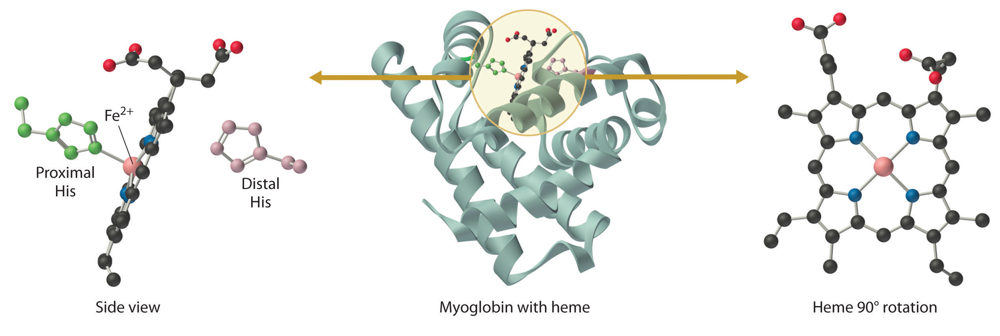The iron in deoxymyoglobin is five-coordinate, with one histidine imidazole ligand from the protein. Oxygen binds at the vacant site on iron.
Figure 23.24 Oxygen Binding to Myoglobin and Hemoglobin
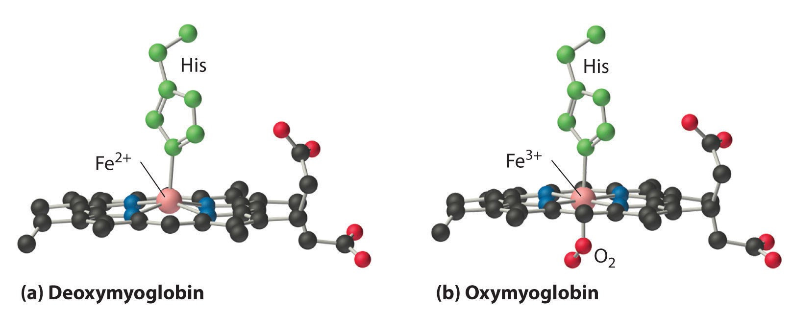(a) The Fe2+ ion in deoxymyoglobin is high spin, which makes it too large to fit into the “hole” in the center of the porphyrin. (b) When O2 binds to deoxymyoglobin, the iron is converted to low-spin Fe3+, which is smaller, allowing the iron to move into the plane of the four nitrogen atoms of the porphyrin to form an octahedral complex.
Hemoglobin consists of two subunits of 141 amino acids and two subunits of 146 amino acids, both similar to myoglobin; it is called a tetramer because of its four subunits. Because hemoglobin has very different O2-binding properties, however, it is not simply a “super myoglobin” that can carry four O2 molecules simultaneously (one per heme group). The shape of the O2-binding curve of myoglobin (Mb; Figure 23.25 "The O") can be described mathematically by the following equilibrium:
Equation 23.15
In contrast, the O2-binding curve of hemoglobin is S shaped (Figure 23.25 "The O"). As shown in the curves, at low oxygen pressures, the affinity of deoxyhemoglobin for O2 is substantially lower than that of myoglobin, whereas at high O2 pressures the two proteins have comparable O2 affinities. The physiological consequences of the unusual S-shaped O2-binding curve of hemoglobin are enormous. In the lungs, where O2 pressure is highest, the high oxygen affinity of deoxyhemoglobin allows it to be completely loaded with O2, giving four O2 molecules per hemoglobin. In the tissues, however, where the oxygen pressure is much lower, the decreased oxygen affinity of hemoglobin allows it to release O2, resulting in a net transfer of oxygen to myoglobin.
Figure 23.25 The O2-Binding Curves of Myoglobin and Hemoglobin
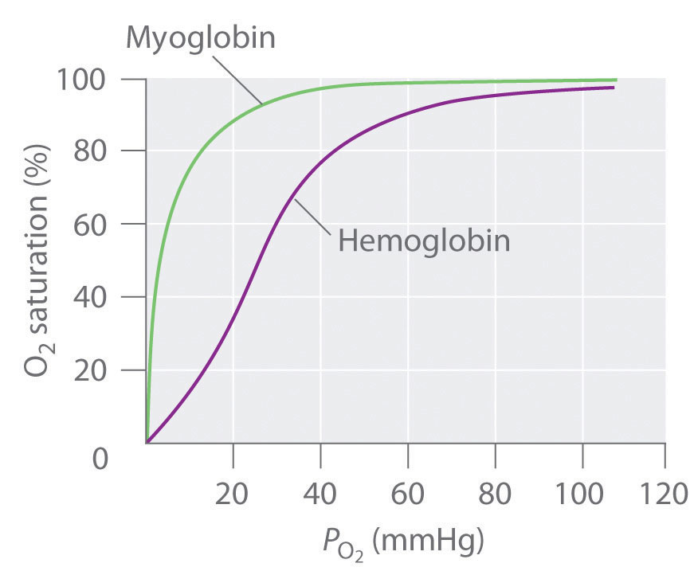The curve for myoglobin can be described by a simple equilibrium between deoxy- and oxymyoglobin, but the S-shaped curve for hemoglobin can be described only in terms of a cooperative interaction between the four hemes.
The S-shaped O2-binding curve of hemoglobin is due to a phenomenon called cooperativity, in which the affinity of one heme for O2 depends on whether the other hemes are already bound to O2. Cooperativity in hemoglobin requires an interaction between the four heme groups in the hemoglobin tetramer, even though they are more than 3000 pm apart, and depends on the change in structure of the heme group that occurs with oxygen binding. The structures of deoxyhemoglobin and oxyhemoglobin are slightly different, and as a result, deoxyhemoglobin has a much lower O2 affinity than myoglobin, whereas the O2 affinity of oxyhemoglobin is essentially identical to that of oxymyoglobin. Binding of the first two O2 molecules to deoxyhemoglobin causes the overall structure of the protein to change to that of oxyhemoglobin; consequently, the last two heme groups have a much higher affinity for O2 than the first two.
Oxygen is not unique in its ability to bind to a ferrous heme complex; small molecules such as CO and NO bind to deoxymyoglobin even more tightly than does O2. The interaction of the heme iron with oxygen and other diatomic molecules involves the transfer of electron density from the filled t2g orbitals of the low-spin d6 Fe2+ ion to the empty π* orbitals of the ligand. In the case of the Fe2+–O2 interaction, the transfer of electron density is so great that the Fe–O2 unit can be described as containing low-spin Fe3+ (d5) and O2−. We can therefore represent the binding of O2 to deoxyhemoglobin and its release as a reversible redox reaction:
Equation 23.16
Fe2+ + O2 ⇌ Fe3+–O2−As shown in Figure 23.26 "Binding of O", the Fe–O2 unit is bent, with an Fe–O–O angle of about 130°. Because the π* orbitals in CO are empty and those in NO are singly occupied, these ligands interact more strongly with Fe2+ than does O2, in which the π* orbitals of the neutral ligand are doubly occupied.
Figure 23.26 Binding of O2 and CO to the Iron of Myoglobin
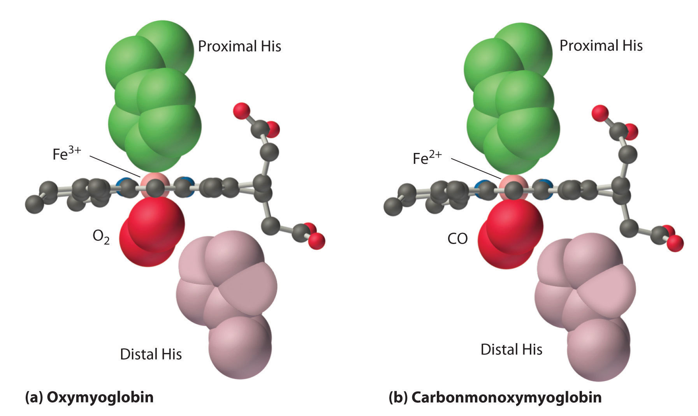Because the Fe–O–O unit is bent, while the Fe–C–O unit is linear, the imidazole group of the distal histidine in hemoglobin interferes with CO binding and decreases the affinity of hemoglobin for CO.
Although CO has a much greater affinity for a ferrous heme than does O2 (by a factor of about 25,000), the affinity of CO for deoxyhemoglobin is only about 200 times greater than that of O2, which suggests that something in the protein is decreasing its affinity for CO by a factor of about 100. Both CO and NO bind to ferrous hemes in a linear fashion, with an Fe–C(N)–O angle of about 180°, and the difference in the preferred geometry of O2 and CO provides a plausible explanation for the difference in affinities. As shown in Figure 23.26 "Binding of O", the imidazole group of the distal histidine is located precisely where the oxygen atom of bound CO would be if the Fe–C–O unit were linear. Consequently, CO cannot bind to the heme in a linear fashion; instead, it is forced to bind in a bent mode that is similar to the preferred structure for the Fe–O2 unit. This results in a significant decrease in the affinity of the heme for CO, while leaving the O2 affinity unchanged, which is important because carbon monoxide is produced continuously in the body by degradation of the porphyrin ligand (even in nonsmokers). Under normal conditions, CO occupies approximately 1% of the heme sites in hemoglobin and myoglobin. If the affinity of hemoglobin and myoglobin for CO were 100 times greater (due to the absence of the distal histidine), essentially 100% of the heme sites would be occupied by CO, and no oxygen could be transported to the tissues. Severe carbon-monoxide poisoning, which is frequently fatal, has exactly the same effect. Thus the primary function of the distal histidine appears to be to decrease the CO affinity of hemoglobin and myoglobin to avoid self-poisoning by CO.
Hemerythrin is used to transport O2 in a variety of marine invertebrates. It is an octamer (eight subunits), with each subunit containing two iron atoms and binding one molecule of O2. Deoxyhemerythrin contains two Fe2+ ions per subunit and is colorless, whereas oxyhemerythrin contains two Fe3+ ions and is bright reddish violet. These invertebrates also contain a monomeric form of hemerythrin that is located in the tissues, analogous to myoglobin. The binding of oxygen to hemerythrin and its release can be described by the following reaction, where the HO2− ligand is the hydroperoxide anion derived by the deprotonation of hydrogen peroxide (H2O2):
Equation 23.17
2Fe2+ + O2 + H+ ⇌ 2Fe3+–O2HThus O2 binding is accompanied by the transfer of two electrons (one from each Fe2+) and a proton to O2.
Hemocyanin is used for oxygen transport in many arthropods (spiders, crabs, lobsters, and centipedes) and in mollusks (shellfish, octopi, and squid); it is responsible for the bluish-green color of their blood. The protein is a polymer of subunits that each contain two copper atoms (rather than iron), with an aggregate molecular mass of greater than 1,000,000 amu. Deoxyhemocyanin contains two Cu+ ions per subunit and is colorless, whereas oxyhemocyanin contains two Cu2+ ions and is bright blue. As with hemerythrin, the binding and release of O2 correspond to a two-electron reaction:
Equation 23.18
2Cu+ + O2 ⇌ Cu2+–O22−–Cu2+Although hemocyanin and hemerythrin perform the same basic function as hemoglobin, these proteins are not interchangeable. In fact, hemocyanin is so foreign to humans that it is one of the major factors responsible for the common allergies to shellfish.
Myoglobin, hemoglobin, hemerythrin, and hemocyanin all use a transition-metal complex to transport oxygen.
Many of the enzymes involved in the biological reactions of oxygen contain metal centers with structures that are similar to those used for O2 transport. Many of these enzymes also contain metal centers that are used for electron transfer, which have structures similar to those of the electron-transfer proteins discussed previously. In this section, we briefly describe two of the most important examples: dioxygenases and methane monooxygenase.
Dioxygenases are enzymes that insert both atoms of O2 into an organic molecule. In humans, dioxygenases are responsible for cross-linking collagen in connective tissue and for synthesizing complex organic molecules called prostaglandins, which trigger inflammation and immune reactions. Iron is by far the most common metal in dioxygenases; and the target of the most commonly used drug in the world, aspirin, is an iron enzyme that synthesizes a specific prostaglandin. Aspirin inhibits this enzyme by binding to the iron atom at the active site, which prevents oxygen from binding.
Methane monooxygenase catalyzes the conversion of methane to methanol. The enzyme is a monooxygenase because only one atom of O2 is inserted into an organic molecule, while the other is reduced to water:
Equation 23.19
CH4 + O2 + 2e− + 2H+ → CH3OH + H2OBecause methane is the major component of natural gas, there is enormous interest in using this reaction to convert methane to a liquid fuel (methanol) that is much more convenient to ship and store. Because the C–H bond in methane is one of the strongest C–H bonds known, however, an extraordinarily powerful oxidant is needed for this reaction. The active site of methane monooxygenase contains two Fe atoms that bind O2, but the details of how the bound O2 is converted to such a potent oxidant remain unclear.
Reactions catalyzed by metal ions that do not change their oxidation states during the reaction are usually group transfer reactionsReactions involving the transfer of a group, catalyzed by metal ions that do not change their oxidation states during the reaction., in which a group such as the phosphoryl group (−PO32−) is transferred. These enzymes usually use metal ions such as Zn2+, Mg2+, and Mn2+, and they range from true metalloenzymes, in which the metal ion is tightly bound, to metal-activated enzymes, which require the addition of metal ions for activity. Because tight binding is usually the result of specific metal–ligand interactions, metalloenzymes tend to be rather specific for a particular metal ion. In contrast, the binding of metal ions to metal-activated enzymes is largely electrostatic in nature; consequently, several different metal ions with similar charges and sizes can often be used to give an active enzyme.
Metalloenzymes generally contain a specific metal ion, whereas metal-activated enzymes can use any of several metal ions of similar size and charge.
A metal ion that acts as a Lewis acid can catalyze a group transfer reaction in many different ways, but we will focus on only one of these, using a zinc enzyme as an example. Carbonic anhydrase is found in red blood cells and catalyzes the reaction of CO2 with water to give carbonic acid.
Equation 23.20
Although this reaction occurs spontaneously in the absence of a catalyst, it is too slow to absorb all the CO2 generated during respiration. Without a catalyst, tissues would explode due to the buildup of excess CO2 pressure. Carbonic anhydrase contains a single Zn2+ ion per molecule, which is coordinated by three histidine imidazole ligands and a molecule of water. Because Zn2+ is a Lewis acid, the pKa of the Zn2+–OH2 unit is about 8 versus 14 for pure water. Thus at pH 7–8, a significant fraction of the enzyme molecules contain the Zn2+–OH− group, which is much more reactive than bulk water. When carbon dioxide binds in a nonpolar site next to the Zn2+–OH− unit, it reacts rapidly to give a coordinated bicarbonate ion that dissociates from the enzyme:
Equation 23.21
Zn2+–OH− + CO2 ⇌ Zn2+–OCO2H− ⇌ Zn2+ + HCO3−The active site of carbonic anhydrase.
Thus the function of zinc in carbonic anhydrase is to generate the hydroxide ion at pH 7.0, far less than the pH required in the absence of the metal ion.
An organic radical is an organic species that contains one or more unpaired electrons. Chemists often consider organic radicals to be highly reactive species that produce undesirable reactions. For example, they have been implicated in some of the irreversible chemical changes that accompany aging. It is surprising, however, that organic radicals are also essential components of many important enzymes, almost all of which use a metal ion to generate the organic radical within the enzyme. These enzymes are involved in the synthesis of hemoglobin and DNA, among other important biological molecules, and they are the targets of pharmaceuticals for the treatment of diseases such as anemia, sickle-cell anemia, and cancer. In this section, we discuss one class of radical enzymes that use vitamin B12.
Vitamin B12 was discovered in the 1940s as the active agent in the cure of pernicious anemia, which does not respond to increased iron in the diet. Humans need only tiny amounts of vitamin B12, and the average blood concentration in a healthy adult is only about 3.5 × 10−8 M. The structure of vitamin B12, shown in Figure 23.27 "Vitamin B", is similar to that of a heme, but it contains cobalt instead of iron, and its structure is much more complex. In fact, vitamin B12 has been called the most complex nonpolymeric biological molecule known and was the first naturally occurring organometallic compound to be isolated. When vitamin B12 (the form present in vitamin tablets) is ingested, the axial cyanide ligand is replaced by a complex organic group.
Figure 23.27 Vitamin B12
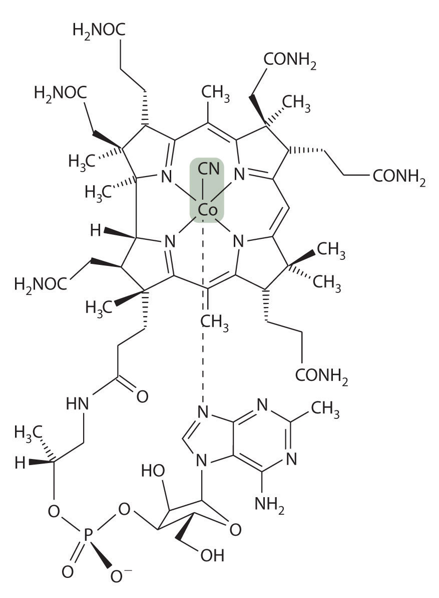In the body, the axial cyanide ligand found in the vitamin is replaced by a complex organic unit. Heterolytic cleavage of the Co–C bond in the resulting organometallic complex generates an organic radical for the catalysis of rearrangement reactions.
The cobalt–carbon bond in the enzyme-bound form of vitamin B12 and related compounds is unusually weak, and it is particularly susceptible to homolytic cleavage:
Equation 23.22
Homolytic cleavage of the Co3+–CH2R bond produces two species, each of which has an unpaired electron: a d7 Co2+ derivative and an organic radical, ·CH2R, which is used by vitamin B12-dependent enzymes to catalyze a wide variety of reactions. Virtually all vitamin B12-catalyzed reactions are rearrangements in which an H atom and an adjacent substituent exchange positions:
In the conversion of ethylene glycol to acetaldehyde, the initial product is the hydrated form of acetaldehyde, which rapidly loses water:
The enzyme uses the ·CH2R radical to temporarily remove a hydrogen atom from the organic substrate, which then rearranges to give a new radical. Transferring the hydrogen atom back to the rearranged radical gives the product and regenerates the ·CH2R radical.
The metal is not involved in the actual catalytic reaction; it provides the enzyme with a convenient mechanism for generating an organic radical, which does the actual work. Many examples of similar reactions are now known that use metals other than cobalt to generate an enzyme-bound organic radical.
Nearly all vitamin B12-catalyzed reactions are rearrangements that occur via a radical reaction.
Three separate steps are required for organisms to obtain essential transition metals from their environment: mobilization of the metal, transport of the metal into the cell, and transfer of the metal to where it is needed within a cell or an organism. The process of iron uptake is best understood. To overcome the insolubility of Fe(OH)3, many bacteria use organic ligands called siderophores, which have high affinity for Fe(III) and are secreted into the surrounding medium to increase the total concentration of dissolved iron. The iron–siderophore complex is absorbed by a cell, and the iron is released by reduction to Fe(II). Mammals use the low pH of the stomach to increase the concentration of dissolved iron. Iron is absorbed in the intestine, where it forms an Fe(III) complex with a protein called transferrin that is transferred to other cells for immediate use or storage in the form of ferritin.
Proteins that contain one or more tightly bound metal ions are called metalloproteins, and metalloproteins that catalyze biochemical reactions are called metalloenzymes. Proteins that transfer electrons from one place to another are called electron-transfer proteins. Most electron-transfer proteins are metalloproteins, such as iron–sulfur proteins, cytochromes, and blue copper proteins that accept and donate electrons. The oxidized and reduced centers in all electron-transfer proteins have similar structures to ensure that electron transfer to and from the metal occurs rapidly. Metalloproteins also use the ability of transition metals to bind small molecules, such as O2, N2, and H2, to transport or catalyze the reactions of these small molecules. For example, hemoglobin, hemerythrin, and hemocyanin, which contain heme iron, nonheme iron, and copper, respectively, are used by different kinds of organisms to bind and transfer O2. Other metalloenzymes use transition-metal ions as Lewis acids to catalyze group transfer reactions. Finally, some metalloenzymes use homolytic cleavage of the cobalt–carbon bond in derivatives of vitamin B12 to generate an organic radical that can abstract a hydrogen atom and thus cause molecular rearrangements to occur.
What are the advantages of having a metal ion at the active site of an enzyme?
Why does the structure of the metal center in a metalloprotein that transfers electrons show so little change after oxidation or reduction?
In enzymes, explain how metal ions are particularly suitable for generating organic radicals.
A common method for treating carbon-monoxide poisoning is to have the patient inhale pure oxygen. Explain why this treatment is effective.
Tungsten bronzes are semimetallic solids that are inert to strong acids and bases, lustrous, and good conductors of electricity; they are used in the production of bronze or metallic paints. These nonstoichiometric compounds have the general formula MxWO3, where M = Na, K, a group 2 metal, or a lanthanide and x < 1. The properties of tungsten bronzes suggest that at least some of the tungsten atoms are in the +6 oxidation state. Given the high oxidation state, why do these solids conduct electricity?
Gout is a painful disorder caused by the overproduction of uric acid, which is deposited as sodium urate crystals in joints. The enzyme that catalyzes the production of uric acid contains Fe3+ and Mo6+. Molecular oxygen is a substrate in this reaction. Based on the oxidation states of the metals, what do you expect one of the products of the reaction to be?
A laboratory technician added aqueous ammonia to an aqueous solution of Mn2+, which produced a pale pink precipitate. She left the solution exposed to air and went home. The next day she returned to the lab and found that her pink precipitate had turned brown-black. Write balanced chemical equations to show what had happened.
Plants use Mn(IV) during photosynthesis to produce dioxygen from water. Write a balanced chemical equation showing this reaction and suggest why Mn is well suited for this purpose.
Rust stains (Fe2O3) can be removed from fabrics by oxalic acid (HO2CCO2H). Write a balanced chemical equation showing the reaction that occurs and predict the solubility of the product in water.
It has been suggested that complexes that can coordinate N2 are used by bacteria to fix atmospheric nitrogen. One such complex is [Ru(NH3)5·N2]Cl2, which was first discovered in 1965. Sigma bonding with N2 in this complex would be weak because the N2 molecule is symmetrical and has zero dipole moment.
Monel metal, which contains 68% Ni, 32% Cu, and traces of Fe and Mn, is highly corrosion resistant. It is used, for example, to make items that will be used in marine environments and to hold corrosive fluorine compounds. Based on its composition, why is Monel particularly suitable for these purposes?
From 1845 to 1850, a fungus known as “potato blight” caused a potato famine in Ireland. Approximately 25% of the Irish population either died or emigrated as a direct result. A spray called Bordeaux mixture is now used to kill the fungus; it is made by the reaction of CuSO4 with Ca(OH)2. What is the formula of the Bordeaux mixture? Write a balanced chemical equation for the reaction.
Many transition metals and their compounds are used as catalysts. Given MnO2, FeCl3, Pt, and Ni, which would you select for each purpose and why?
The Fe2+ site in hemoglobin binds oxygen reversibly; consequently, it is suitable for transporting oxygen in blood. Various other small molecules can bind to the iron instead, thus preventing oxygen transport. Based on the type of bonding, why are CO and NO particularly toxic? Would they be as toxic if hemoglobin contained a V2+ center instead of Fe2+? Why?
In 1951, G. Wilkinson reported a surprising iron–hydrocarbon compound that is now called ferrocene. Ferrocene is orange and has a structure in which the metal is sandwiched between two planar cyclopentadienyl (C5H5−) rings. It can be viewed as a compound of Fe2+ with two C5H5− rings. Ferrocene does not contain Fe–C σ bonds but another type of bond formed by the lateral overlap of orbitals. Which metal orbitals are involved? A similar structure is obtained with Ru2+. One of these metals forms a sandwich complex that has a staggered conformation, and the other forms a complex that is eclipsed. Which metal produces which conformation? Why?

The Ziegler–Natta catalyst is used for the polymerization of ethylene to form high-density polyethylene, a widely used lightweight plastic. The active form of the catalyst is believed to be TiCl3CH2CH3, and the first step in the polymerization reaction is believed to be binding of the double bond in ethylene to Ti. If you were interested in developing a similar catalyst for this same purpose, would you choose chlorides of Zr, Hf, V, Nb, Ta, Cr, Mo, or W? Why?
Cobalt(II) chloride is used as a visual indicator of humidity because it exists as a blue complex when dry and a pink complex when exposed to moisture in the air. The bonding environment around the cobalt in one of these complexes is octahedral; in the other, it is tetrahedral. What reaction occurs to produce the color change? Write a balanced chemical equation for this reaction, indicating the species present.
A platinum complex that is widely available commercially is chloroplatinic acid {H2[PtCl6]}, which is used to make platinized asbestos, a catalyst. What is the structure of chloroplatinic acid? Is it distorted from an idealized geometry? Do you expect it to be colored? Justify your answers.
The tungsten bronzes can be viewed as the products of partial reduction of WO3 by an active metal to give a mixture of W(VI) and W(V). In the solid, the d orbitals of the metal overlap to form a partially filled band, which is responsible for the luster and metallic conductivity.